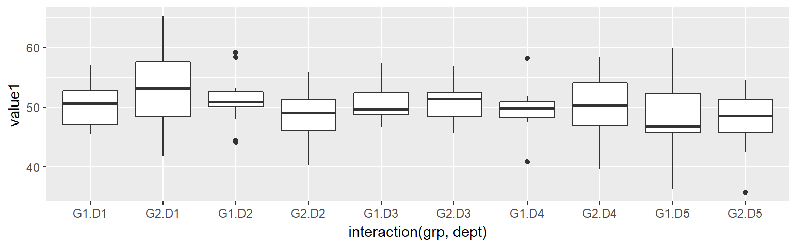
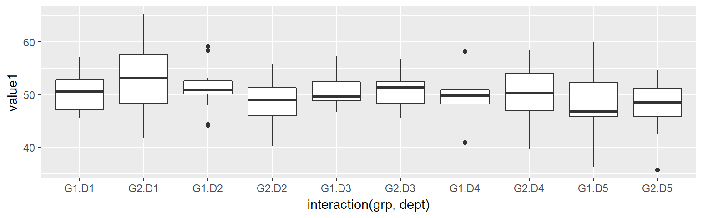

Preface
1 R Fundamentals
1.1 Package Management
1.1.1 Package Storage
Here is where all the libraries are stored.
Can you guess which are the baseR and third party libraries stored ?
.libPaths()## [1] "C:/Users/YKS-NIC/Documents/R/win-library/3.3"
## [2] "C:/Program Files/R/R-3.3.3/library"1.1.2 Package Listing
Use installed.packages() to return a data frame that list all installed packages.
head( installed.packages() )## Package LibPath
## abind "abind" "C:/Users/YKS-NIC/Documents/R/win-library/3.3"
## assertthat "assertthat" "C:/Users/YKS-NIC/Documents/R/win-library/3.3"
## backports "backports" "C:/Users/YKS-NIC/Documents/R/win-library/3.3"
## base64enc "base64enc" "C:/Users/YKS-NIC/Documents/R/win-library/3.3"
## BH "BH" "C:/Users/YKS-NIC/Documents/R/win-library/3.3"
## bitops "bitops" "C:/Users/YKS-NIC/Documents/R/win-library/3.3"
## Version Priority Depends Imports LinkingTo
## abind "1.4-5" NA "R (>= 1.5.0)" "methods, utils" NA
## assertthat "0.2.0" NA NA "tools" NA
## backports "1.1.0" NA "R (>= 3.0.0)" "utils" NA
## base64enc "0.1-3" NA "R (>= 2.9.0)" NA NA
## BH "1.62.0-1" NA NA NA NA
## bitops "1.0-6" NA NA NA NA
## Suggests Enhances License License_is_FOSS
## abind NA NA "LGPL (>= 2)" NA
## assertthat "testthat" NA "GPL-3" NA
## backports NA NA "GPL-2" NA
## base64enc NA "png" "GPL-2 | GPL-3" NA
## BH NA NA "BSL-1.0" NA
## bitops NA NA "GPL (>= 2)" NA
## License_restricts_use OS_type MD5sum NeedsCompilation Built
## abind NA NA NA "no" "3.3.2"
## assertthat NA NA NA "no" "3.3.3"
## backports NA NA NA "no" "3.3.3"
## base64enc NA NA NA "yes" "3.3.2"
## BH NA NA NA "no" "3.3.2"
## bitops NA NA NA "yes" "3.3.2"TOO MANY COLUMNS !!
Below are the column names and its numbering for filtering purpose.
colnames( installed.packages() )## [1] "Package" "LibPath"
## [3] "Version" "Priority"
## [5] "Depends" "Imports"
## [7] "LinkingTo" "Suggests"
## [9] "Enhances" "License"
## [11] "License_is_FOSS" "License_restricts_use"
## [13] "OS_type" "MD5sum"
## [15] "NeedsCompilation" "Built"Perform column filter based on column names as necessary.
Set parameter priority = ‘NA’ to exclude base R packages.
head( installed.packages( priority='NA' ) [,c(1,3)] )## Package Version
## abind "abind" "1.4-5"
## assertthat "assertthat" "0.2.0"
## backports "backports" "1.1.0"
## base64enc "base64enc" "0.1-3"
## BH "BH" "1.62.0-1"
## bitops "bitops" "1.0-6"Set parameter priority = ‘high’ will include ONLY base R packages
head( installed.packages( priority='high' ) [,c(3,2)] )## Version LibPath
## boot "1.3-19" "C:/Users/YKS-NIC/Documents/R/win-library/3.3"
## cluster "2.0.6" "C:/Users/YKS-NIC/Documents/R/win-library/3.3"
## foreign "0.8-68" "C:/Users/YKS-NIC/Documents/R/win-library/3.3"
## lattice "0.20-35" "C:/Users/YKS-NIC/Documents/R/win-library/3.3"
## MASS "7.3-47" "C:/Users/YKS-NIC/Documents/R/win-library/3.3"
## Matrix "1.2-10" "C:/Users/YKS-NIC/Documents/R/win-library/3.3"1.1.3 Package Install / Removal
install.packages( c('ggplot', 'ggExtra') )
remove.packages ( c('ggplot', 'ggExtra') )1.1.4 Package Update
old.packages() ## list all old packages, their old version and available new version
update.packages() ## need to input y/n/c for each old package to update
update.packages( ask=FALSE ) ## automatically update all packages without asking1.1.5 Package Corruption
Sometimes a corrupted R package can give below issues:
- Error loading a library
- Error installing a library
- Error removing a library
The solution is to:
- Remove the problematic package folder (see where they are stored using .libPaths() )
- Reinstall the package
1.2 Data Types
1.2.1 String
1.2.1.1 String Comparison
1.2.1.2 String Manipulations
Splitting
Combining
Extracting
1.2.2 Dates Manipulation
1.2.2.1 Formatting
1.2.2.2 Dates Comparison
1.2.2.3 Dates Manipulation
Days Between
First Day of the Month
Last Day of the Month
Days/Months/Years After
1.3 Conditioinal Decision
1.4 Looping
1.5 Apply Family
1.5.1 Overview
- Apply and its family is a useful function
1.5.2 apply
1.5.3 sapply
1.5.4 tapply
1.6 Data Import
1.6.1 Working Directory
To display the current working directory.
getwd()
## [1] "C:/Users/YKS-NIC/Dropbox/R/business_technical_analytics_r"To set the working directory, use below:
setwd("...new path...)1.6.2 Importing CSV
read.csv is a similar to read.table but with some defaults value set as below for convenience of CSV import.
In the resulting data.frame, row.names attribute are automatically assigned with sequence number starting from 1.
read.csv ( file,
\(\quad\) header = TRUE - contain header row
\(\quad\) sep = “,” - column seperator marked as ‘,’
\(\quad\) dec = “.” - decimals marked as ‘.’
\(\quad\) na.strings = “NA” - vectors that define missing data marking
\(\quad\) check.names = TRUE - col names with white space replaced with ‘.’
\(\quad\) stringsAsFactors = TRUE - convert string to factor
Examine the below example of data import process (Excel–>csv–>R data.frame):
1.6.2.1 Original Excel Data Source

Check out the Yellow areas in codes below !
1.6.2.2 Exported CSV File from Excel
,,dept,gender,weight,height,date_birth,amount,date_last,date first
1,ID101,D1,Male,35,173,1/7/1973,100,2/29/2016,2013-07-31
2,ID102,D2,Female,37.1,164,28/2/1980,121,4/1/2017,2013-08-31
3,ID103,D3,Female,43.12,178,31/12/1978,152,10/31/2015,2014-12-31
4,ID104,D1,Male,38.123,182,12/1/1997,133,11/1/2016,2015-02-28
5,ID105,D1,Male,54.1234,159,2/1/1982,143,9/30/2016,2012-06-15
,ID106,D3,Female,34.12345,166,26/7/1973,155,11/27/2015,2013-04-28
7,ID107,D2,Male,49.123456,153,21/8/1985,117,3/31/2017,2014-03-01
8,ID108,D3,Female,75.1,151,9/8/1983,135,2/1/2015,
9,ID109,D2,Male,52.1,169,NULL,128,NA,
10,ID110,D3,NULL,88.8,171,NULL,141,NA,1.6.2.3 Import Into R Data Frame
Example below specify multiple string elements that represents missing data in the CSV file. Also turn FALSE for stirngsAsFactors so all string columns are not converted to factor automatically.
./ is a relative path represents current R working directory. It can be replaced with complete non-relative path.
sample.df <- read.csv ( file="./datasets/import_sample.csv",
stringsAsFactors = FALSE,
na.strings=c('NA','NULL',''),
encoding="UTF-8")
sample.df## X X.1 dept gender weight height date_birth amount date_last
## 1 1 ID101 D1 Male 35.00000 173 1/7/1973 100 2/29/2016
## 2 2 ID102 D2 Female 37.10000 164 28/2/1980 121 4/1/2017
## 3 3 ID103 D3 Female 43.12000 178 31/12/1978 152 10/31/2015
## 4 4 ID104 D1 Male 38.12300 182 12/1/1997 133 11/1/2016
## 5 5 ID105 D1 Male 54.12340 159 2/1/1982 143 9/30/2016
## 6 NA ID106 D3 Female 34.12345 166 26/7/1973 155 11/27/2015
## 7 7 ID107 D2 Male 49.12346 153 21/8/1985 117 3/31/2017
## 8 8 ID108 D3 Female 75.10000 151 9/8/1983 135 2/1/2015
## 9 9 ID109 D2 Male 52.10000 169 <NA> 128 <NA>
## 10 10 ID110 D3 <NA> 88.80000 171 <NA> 141 <NA>
## date.first
## 1 2013-07-31
## 2 2013-08-31
## 3 2014-12-31
## 4 2015-02-28
## 5 2012-06-15
## 6 2013-04-28
## 7 2014-03-01
## 8 <NA>
## 9 <NA>
## 10 <NA>Parameter check.names=TRUE automatically named ‘unnamed’ column, as well as replacing white spaces for column names with ‘.’.
All non-numeric data are imported as chr due to stringsAsFactor=FALSE.
str(sample.df)
## 'data.frame': 10 obs. of 10 variables:
## $ X : int 1 2 3 4 5 NA 7 8 9 10
## $ X.1 : chr "ID101" "ID102" "ID103" "ID104" ...
## $ dept : chr "D1" "D2" "D3" "D1" ...
## $ gender : chr "Male" "Female" "Female" "Male" ...
## $ weight : num 35 37.1 43.1 38.1 54.1 ...
## $ height : int 173 164 178 182 159 166 153 151 169 171
## $ date_birth: chr "1/7/1973" "28/2/1980" "31/12/1978" "12/1/1997" ...
## $ amount : int 100 121 152 133 143 155 117 135 128 141
## $ date_last : chr "2/29/2016" "4/1/2017" "10/31/2015" "11/1/2016" ...
## $ date.first: chr "2013-07-31" "2013-08-31" "2014-12-31" "2015-02-28" ...2 Data Generation
Here is a review of existing methods.
2.1 Sequential Number
2.1.1 Using : : return vector
Produce sequantial integer with fix incremental or decremental by 1
Incremental
3:6 # incremental integer
1.25:9.25 # incremental decimal
c(3:6, 4.25:8.25) # combination of multiple sequence## [1] 3 4 5 6
## [1] 1.25 2.25 3.25 4.25 5.25 6.25 7.25 8.25 9.25
## [1] 3.00 4.00 5.00 6.00 4.25 5.25 6.25 7.25 8.25Decremental
6:3 # decremental integer
9.25: 1.25 # decremental decimal## [1] 6 5 4 3
## [1] 9.25 8.25 7.25 6.25 5.25 4.25 3.25 2.25 1.252.1.2 Using seq : return vector
Improvement from :, seq allows specifying incremental steps with by=.
seq( from, to )
seq( from, to, by = )
seq( from, to, length.out = ) # potentially return decimal
Incremental
seq (3, 12) # default increment by=1
seq (3, 12, by = 4) # increment of integer
seq (3.25, 12.25, by = 2.25) # increment of decimal ## [1] 3 4 5 6 7 8 9 10 11 12
## [1] 3 7 11
## [1] 3.25 5.50 7.75 10.00 12.25Decremental - from must be larger than to, and by has to be negative.
seq (12, 3) # default decrement by=-1
seq (12, 3, by = -4) # decrement of integer
seq (12.25, 3.25, by = -2.25) # decrement of decimal## [1] 12 11 10 9 8 7 6 5 4 3
## [1] 12 8 4
## [1] 12.25 10.00 7.75 5.50 3.25Equal Spreading - with length.out=
Equal Spreading of Integer
seq (10, 50, length.out = 9) # incremental spreding of integer
seq (50, 10, length.out = 9) # decremental spreading of integer## [1] 10 15 20 25 30 35 40 45 50
## [1] 50 45 40 35 30 25 20 15 10Equal Spreading of Decimal
seq (10.33, 50.55, length.out = 9) # incremental spreading of decimal
seq (50.55, 10.33, length.out = 9) # decremental spreading of decimal## [1] 10.3300 15.3575 20.3850 25.4125 30.4400 35.4675 40.4950 45.5225 50.5500
## [1] 50.5500 45.5225 40.4950 35.4675 30.4400 25.4125 20.3850 15.3575 10.33002.2 Random Number
2.2.1 Unified Distribution
runif( n ) # default min=0, max=1
runif( n, min=, max= )
set.seed(123)
runif(5) # geenrate 5 numbers within default min=0, max=1
runif(5, min=3, max=9)## [1] 0.2875775 0.7883051 0.4089769 0.8830174 0.9404673
## [1] 3.273339 6.168633 8.354514 6.308610 5.739688Notice that the numbers generated are uniformly distributed.
hist(runif(300, min=3, max=9))
2.2.2 Normal Distribution
rnorm( n ) # default mean=0, sd=1
rnorm( n, mean=, sd= )
set.seed(123)
rnorm(5) # geenrate 5 numbers within default min=0, max=1
rnorm(5, mean=3, sd=1.5)## [1] -0.56047565 -0.23017749 1.55870831 0.07050839 0.12928774
## [1] 5.572597 3.691374 1.102408 1.969721 2.331507Notice that the numbers generated are uniformly distributed.
hist(rnorm(300, mean=3, sd=1.5))
2.2.3 Binomial Distribution
The code below generates ‘n’ number of observations, each observation is the number of success for a number of trials, and there is a specific probability for success of each trial:
The numbers generated has the below characteristic:
- Discrete number
- Binomial distribution often well approximated by a Normal distribution, where:
- mean = n * prob
- variance = n * prob (1-prob)
Theoritically, when n approaches infitity, a binomial is a normal distribution
- mean = n * prob
rbinorm( n, size, prob )
rbinorm( n=, size=, prob= )
\(\quad\)n = number of observations
\(\quad\)size = number of trials per observations
\(\quad\)prob = probability of success for each trial
rbinom(100, 10, 0.4)
## [1] 6 6 5 3 1 3 3 6 3 3 5 6 4 5 2 3 7 5 5 4 4 5 6 4 2 4 5 2 3 4 5 6 4 4 5
## [36] 6 6 2 4 3 6 5 2 5 3 2 6 2 5 3 1 4 2 3 4 4 5 3 4 4 5 5 5 6 7 4 4 3 4 3
## [71] 1 5 4 2 3 4 2 2 4 3 6 3 1 6 3 4 4 3 3 4 4 4 5 5 4 4 1 0 8 2hist(rbinom(100, 10, 0.4))
2.2.4 Beta Distribution
Balanced Skewness
hist(rbeta(1000, 1, 1)) # no left and right skewness = uniform
hist(rbeta(1000, 10, 10)) # balanced left and right skew
hist(rbeta(1000, 100, 100)) # more balanced left and right skew


Left or Right Skew
hist(rbeta(1000, 1000, 10)) # left skewed more
hist(rbeta(1000, 100, 1000)) # right skew more

2.2.5 Drawing From A Bag
- A bag has been occupied with vector
x(produced using:or any other vector)
sample()will draw from this bag
- Specifying
replace=Temulate that the drwan sample will be put back to the bag for next draw
- R will generate error if no enough samples to draw from ( size > length(x) )
sample( x=, size= )
sample( x=, size=, replace=T) # recycle number even though it is not exhausted
set.seed (123)
sample (10, 5) # choose 5 numbers from the 'bag' containing 1:10
sample (3:10, 5) # choose 5 numbers from the 'bag' containing 3:10
bag = runif(8, min=3, max=9) # define the content of the bag
sample (bag, 5, replace=T) # draw from the bag, recycling numbers## [1] 3 8 4 7 6
## [1] 3 6 8 5 4
## [1] 7.065424 3.252357 3.252357 8.398950 8.3989502.3 Factor
gl generates elements based on given levels. However, it is not randomized.
gl ( n, k, ordered=FALSE )
gl ( n, k, length = n*k, ordered=FALSE )
\(quad\)n = number of levels
\(quad\)k = number of elements to be created per level
\(quad\)length = number of elements to be generated
gl( 3, 5, 9, c('Aaa','Bbb','Ccc'), ordered=TRUE )
## [1] Aaa Aaa Aaa Aaa Aaa Bbb Bbb Bbb Bbb
## Levels: Aaa < Bbb < Ccc
str( gl(3,5, 9, c('Aaa','Bbb','Ccc')) )
## Factor w/ 3 levels "Aaa","Bbb","Ccc": 1 1 1 1 1 2 2 2 23 Data Simulation
3.1 Linear Simulation
gen_slinear = function(n = 50, start = 0, intercept = 0, coef = 1, mean = 0, sd = 1) {
par(mfrow = c(2, 2))
if (start == -1)
my.df = data.frame(x = rnorm(n)) # x is normally distributed random number
else
my.df = data.frame(x = start:n) # x from 0 to 50
my.df$f = my.df$x * coef + intercept # y = coef * x
my.df$residuals = rnorm(length(my.df$x), mean = mean, sd = sd)
my.df$y = my.df$f + my.df$residuals # introduce errors
plot(my.df$x, my.df$f, main = paste('Perfect Fit Line:\nf = ', coef, 'x + ', intercept))
plot(my.df$x, my.df$y, main = 'Constant Normal Errors Introduced')
hist(my.df$y, main = 'Y Distribution')
hist(my.df$residuals, main = 'Residuals Distribution')
my.df
}
my.slinear = gen_slinear(n = 250, start=-1, intercept = 30, coef = 2, mean = 0, sd = 10)
3.1.1 Example of Random Normal X
my.slinear = gen_slinear(n = 250, start=-1, intercept = 30, coef = 2, mean = 0, sd = 10)
3.1.2 Example of Sequantial X (non-random)
my.slinear = gen_slinear(n = 250, start=0, intercept = 30, coef = 2, mean = 0, sd = 10)
3.2 Logarithm Simulation
gen_log = function(n = 50, start = -1, root = 0, mean = 0, sd = 10) {
par(mfrow = c(2, 2))
if (start == -1)
my.df = data.frame(x = rnorm(n)) # x is normally distributed random number
else
my.df = data.frame(x = start:n) # x from 0 to 50
my.df$f = log((my.df$x + root)) # y=log(x+root
my.df$residuals = rnorm(length(my.df$x), mean = mean, sd = sd)
my.df$y = my.df$f + my.df$residuals # introduce errors
plot(my.df$x, my.df$f, main = paste('Perfect Fit Line:\nf=log(x+', root, ')'))
plot(my.df$x, my.df$y, main = 'Constant Normal Errors Introduced')
hist(my.df$y, main = 'Y Distribution')
hist(my.df$residuals, main = 'Residuals Distribution')
my.df
}
gen_log(n=100, start=1, mean=10, sd=0.2)## x f residuals y
## 1 1 0.0000000 10.356622 10.35662
## 2 2 0.6931472 9.715658 10.40880
## 3 3 1.0986123 10.328437 11.42705
## 4 4 1.3862944 10.024847 11.41114
## 5 5 1.6094379 10.000225 11.60966
## 6 6 1.7917595 9.734205 11.52596
## 7 7 1.9459101 10.155945 12.10186
## 8 8 2.0794415 10.258089 12.33753
## 9 9 2.1972246 9.795886 11.99311
## 10 10 2.3025851 10.140941 12.44353
## 11 11 2.3978953 10.265750 12.66365
## 12 12 2.4849066 10.343330 12.82824
## 13 13 2.5649494 9.828083 12.39303
## 14 14 2.6390573 9.797290 12.43635
## 15 15 2.7080502 9.955951 12.66400
## 16 16 2.7725887 10.031765 12.80435
## 17 17 2.8332133 9.826145 12.65936
## 18 18 2.8903718 9.853872 12.74424
## 19 19 2.9444390 10.222327 13.16677
## 20 20 2.9957323 9.966724 12.96246
## 21 21 3.0445224 10.193539 13.23806
## 22 22 3.0910425 9.900336 12.99138
## 23 23 3.1354942 10.185377 13.32087
## 24 24 3.1780538 10.016229 13.19428
## 25 25 3.2188758 9.977108 13.19598
## 26 26 3.2580965 9.627000 12.88510
## 27 27 3.2958369 9.715609 13.01145
## 28 28 3.3322045 10.142168 13.47437
## 29 29 3.3672958 9.741037 13.10833
## 30 30 3.4011974 9.786793 13.18799
## 31 31 3.4339872 10.032686 13.46667
## 32 32 3.4657359 10.183092 13.64883
## 33 33 3.4965076 9.941247 13.43775
## 34 34 3.5263605 10.165998 13.69236
## 35 35 3.5553481 9.748136 13.30348
## 36 36 3.5835189 10.200634 13.78415
## 37 37 3.6109179 10.152595 13.76351
## 38 38 3.6375862 9.893352 13.53094
## 39 39 3.6635616 10.061284 13.72485
## 40 40 3.6888795 10.241077 13.92996
## 41 41 3.7135721 9.799455 13.51303
## 42 42 3.7376696 9.821551 13.55922
## 43 43 3.7612001 10.006030 13.76723
## 44 44 3.7841896 9.915600 13.69979
## 45 45 3.8066625 9.950515 13.75718
## 46 46 3.8286414 10.128830 13.95747
## 47 47 3.8501476 10.043703 13.89385
## 48 48 3.8712010 10.304981 14.17618
## 49 49 3.8918203 9.795191 13.68701
## 50 50 3.9120230 10.103900 14.01592
## 51 51 3.9318256 10.004948 13.93677
## 52 52 3.9512437 9.805870 13.75711
## 53 53 3.9702919 9.660796 13.63109
## 54 54 3.9889840 10.132564 14.12155
## 55 55 4.0073332 9.983414 13.99075
## 56 56 4.0253517 9.741701 13.76705
## 57 57 4.0430513 10.058553 14.10160
## 58 58 4.0604430 9.980418 14.04086
## 59 59 4.0775374 10.319549 14.39709
## 60 60 4.0943446 9.814869 13.90921
## 61 61 4.1108739 10.168137 14.27901
## 62 62 4.1271344 9.871789 13.99892
## 63 63 4.1431347 9.708217 13.85135
## 64 64 4.1588831 10.235564 14.39445
## 65 65 4.1743873 9.544156 13.71854
## 66 66 4.1896547 10.054442 14.24410
## 67 67 4.2046926 10.110215 14.31491
## 68 68 4.2195077 10.080951 14.30046
## 69 69 4.2341065 9.879233 14.11334
## 70 70 4.2484952 9.815594 14.06409
## 71 71 4.2626799 10.095982 14.35866
## 72 72 4.2766661 10.021176 14.29784
## 73 73 4.2904594 9.771924 14.06238
## 74 74 4.3040651 9.805703 14.10977
## 75 75 4.3174881 9.786070 14.10356
## 76 76 4.3307333 9.619565 13.95030
## 77 77 4.3438054 10.210773 14.55458
## 78 78 4.3567088 9.972054 14.32876
## 79 79 4.3694479 9.923880 14.29333
## 80 80 4.3820266 10.295239 14.67727
## 81 81 4.3944492 10.122145 14.51659
## 82 82 4.4067192 10.311371 14.71809
## 83 83 4.4188406 10.455816 14.87466
## 84 84 4.4308168 9.905639 14.33646
## 85 85 4.4426513 10.042537 14.48519
## 86 86 4.4543473 10.533253 14.98760
## 87 87 4.4659081 10.180419 14.64633
## 88 88 4.4773368 10.437282 14.91462
## 89 89 4.4886364 10.119064 14.60770
## 90 90 4.4998097 10.066552 14.56636
## 91 91 4.5108595 10.279845 14.79070
## 92 92 4.5217886 10.212606 14.73439
## 93 93 4.5325995 9.958137 14.49074
## 94 94 4.5432948 9.999681 14.54298
## 95 95 4.5538769 9.919399 14.47328
## 96 96 4.5643482 10.264941 14.82929
## 97 97 4.5747110 9.893774 14.46848
## 98 98 4.5849675 10.033555 14.61852
## 99 99 4.5951199 9.749212 14.34433
## 100 100 4.6051702 10.274920 14.88009
3.3 Parabola Simulation
gen_parabola = function(n = 50, start = -1, root1 = -0.5, root2 = 0.5, mean = 0, sd = 1) {
par(mfrow = c(2, 2))
if (start == -1)
my.df = data.frame(x = rnorm(n)) # x is normally distributed random number
else
my.df = data.frame(x = start:n) # x from 0 to 50
my.df$f = (my.df$x - root1) * (my.df$x - root2) # y=(x-20)(x-30), root at x=20 and x=30
my.df$residuals = rnorm(length(my.df$x), mean = mean, sd = sd)
my.df$y = my.df$f + my.df$residuals # introduce errors
plot(my.df$x, my.df$f, main = paste('Perfect Fit Line:\nf=(x-', root1, ')(x-', root2, ')'))
plot(my.df$x, my.df$y, main = 'Constant Normal Errors Introduced')
hist(my.df$y, main = 'Y Distribution')
hist(my.df$residuals, main = 'Residuals Distribution')
my.df
}3.3.1 Example of Random Normal X
my.parabola = gen_parabola(n = 250, start=-1, root1 = 0.25, root2 = .5, sd = 1000)
3.3.2 Example of Sequantial X (non-random)
my.parabola = gen_parabola(n = 50, start=0, root1 = 20, root2 = 30, sd = 1000)
3.4 Polynomial Simulation
\[ y = \beta_0 + \beta_1 x + \beta_2 x^2 + \beta_3 x^3 + ...+ \beta_k x^k \]
4 Data Summarization
This capter explore manipulating table-like data, summarization and aggregation.
4.1 Sample Data
Sample data used simulate two categorical-alike feature, and two numeric value feature:
- dept is random character between ‘D1’, ‘D2’ and ‘D3’
- grp is random character with randomly generated ‘G1’, ‘G2’
- value1 represents numeric value, normally distributed at mean 50
- value2 is numeric value, normally distributed at mean 25
set.seed(1234)
my.df = data.frame(
com = paste('C',sample(1:2, 100, replace = T),sep=''),
dept = paste('D',sample(1:3, 100, replace = T),sep=''),
grp = paste('G',sample(1:2, 100, replace = T),sep=''),
team = paste('T',sample(1:2, 100, replace = T),sep=''),
value1 = rnorm(1:100, mean = 50, sd = 5),
value2 = rnorm(1:100, mean = 20, sd = 3),
value3 = rnorm(1:100, mean = 5, sd = 1),
stringsAsFactors = F
)
head(my.df)## com dept grp team value1 value2 value3
## 1 C1 D1 G2 T1 52.42613 18.26013 3.773185
## 2 C2 D2 G2 T2 53.48384 17.14016 5.036153
## 3 C2 D1 G1 T2 50.92757 19.46171 4.578607
## 4 C2 D1 G2 T1 53.50367 23.02942 4.100636
## 5 C2 D1 G2 T2 51.55841 20.07088 5.417441
## 6 C2 D1 G2 T1 53.80231 18.05292 5.1534454.2 Frequency Table
table return table object (which is also array) that report frequency count base of categorical-alike data provided.
table has the below data type characteristics. Note that only 2-dimensional table object is a matrix
| Dimension | is.atomic | is.vector | is.matrix | is.array | is.table |
|---|---|---|---|---|---|
| t1 | T | F | F | T | T |
| t2 | T | F | T | T | T |
| t3 | T | F | F | T | T |
| t4 | T | F | F | T | T |
ftable is technically a matrix with two dimensional data (it flatten multiple dimension data). It has below data type characteristic.
| Dimension | is.atomic | is.vector | is.matrix | is.array | is.table |
|---|---|---|---|---|---|
| 1 | T | F | T | T | F |
| 2 | T | F | T | T | F |
| 3 | T | F | T | T | F |
| 4 | T | F | T | T | F |
4.2.1 Single Dimension Data
t1 = table( my.df$com )
t1##
## C1 C2
## 55 45str(t1)## 'table' int [1:2(1d)] 55 45
## - attr(*, "dimnames")=List of 1
## ..$ : chr [1:2] "C1" "C2"4.2.2 Two Dimension Data
t2 = table( my.df$com, my.df$dept )
t2##
## D1 D2 D3
## C1 16 18 21
## C2 15 18 12str(t2)## 'table' int [1:2, 1:3] 16 15 18 18 21 12
## - attr(*, "dimnames")=List of 2
## ..$ : chr [1:2] "C1" "C2"
## ..$ : chr [1:3] "D1" "D2" "D3"4.2.3 Three Dimension Data
When table contain three or more dimension, use ftable (flat table) to put multi dimension table into one flat output
t3 = table( my.df$com, my.df$dept, my.df$grp )
t3## , , = G1
##
##
## D1 D2 D3
## C1 10 7 11
## C2 7 9 4
##
## , , = G2
##
##
## D1 D2 D3
## C1 6 11 10
## C2 8 9 8str(t3)## 'table' int [1:2, 1:3, 1:2] 10 7 7 9 11 4 6 8 11 9 ...
## - attr(*, "dimnames")=List of 3
## ..$ : chr [1:2] "C1" "C2"
## ..$ : chr [1:3] "D1" "D2" "D3"
## ..$ : chr [1:2] "G1" "G2"f3 = ftable( t3 )
f3## G1 G2
##
## C1 D1 10 6
## D2 7 11
## D3 11 10
## C2 D1 7 8
## D2 9 9
## D3 4 8str(f3)## 'ftable' int [1:6, 1:2] 10 7 11 7 9 4 6 11 10 8 ...
## - attr(*, "row.vars")=List of 2
## ..$ : chr [1:2] "C1" "C2"
## ..$ : chr [1:3] "D1" "D2" "D3"
## - attr(*, "col.vars")=List of 1
## ..$ : chr [1:2] "G1" "G2"4.2.4 Four Dimension Data
When table contain three or more dimension, use ftable (flat table) to put multi dimension table into one flat output
t4 = table( my.df$com, my.df$dept, my.df$grp, my.df$team )
t4## , , = G1, = T1
##
##
## D1 D2 D3
## C1 4 5 4
## C2 4 5 1
##
## , , = G2, = T1
##
##
## D1 D2 D3
## C1 3 6 6
## C2 5 5 4
##
## , , = G1, = T2
##
##
## D1 D2 D3
## C1 6 2 7
## C2 3 4 3
##
## , , = G2, = T2
##
##
## D1 D2 D3
## C1 3 5 4
## C2 3 4 4str(t4)## 'table' int [1:2, 1:3, 1:2, 1:2] 4 4 5 5 4 1 3 5 6 5 ...
## - attr(*, "dimnames")=List of 4
## ..$ : chr [1:2] "C1" "C2"
## ..$ : chr [1:3] "D1" "D2" "D3"
## ..$ : chr [1:2] "G1" "G2"
## ..$ : chr [1:2] "T1" "T2"f4 = ftable( t4 )
f4## T1 T2
##
## C1 D1 G1 4 6
## G2 3 3
## D2 G1 5 2
## G2 6 5
## D3 G1 4 7
## G2 6 4
## C2 D1 G1 4 3
## G2 5 3
## D2 G1 5 4
## G2 5 4
## D3 G1 1 3
## G2 4 4str(f4)## 'ftable' int [1:12, 1:2] 4 3 5 6 4 6 4 5 5 5 ...
## - attr(*, "row.vars")=List of 3
## ..$ : chr [1:2] "C1" "C2"
## ..$ : chr [1:3] "D1" "D2" "D3"
## ..$ : chr [1:2] "G1" "G2"
## - attr(*, "col.vars")=List of 1
## ..$ : chr [1:2] "T1" "T2"4.2.5 Making Table Proportion
prop.table converts table or ftable object into proportion. It can calculate table-wise, column-wise or row-wise proportion.
prop.table (x,margin=NULL)
\(\quad\) x = table object
\(\quad\) margin = NULL: proportion table-wise, 1-row_wise, 2-column_wise
4.2.5.1 Proportion Table on ‘table’ object
prop.table( t1 )##
## C1 C2
## 0.55 0.45prop.table( t2 )##
## D1 D2 D3
## C1 0.16 0.18 0.21
## C2 0.15 0.18 0.12prop.table( t2, margin=1 )##
## D1 D2 D3
## C1 0.2909091 0.3272727 0.3818182
## C2 0.3333333 0.4000000 0.2666667prop.table( t2, margin=2 )##
## D1 D2 D3
## C1 0.5161290 0.5000000 0.6363636
## C2 0.4838710 0.5000000 0.36363644.2.5.2 Proportion Table on ‘ftable’ object
prop.table( f3 )## G1 G2
##
## C1 D1 0.10 0.06
## D2 0.07 0.11
## D3 0.11 0.10
## C2 D1 0.07 0.08
## D2 0.09 0.09
## D3 0.04 0.08prop.table( f4 )## T1 T2
##
## C1 D1 G1 0.04 0.06
## G2 0.03 0.03
## D2 G1 0.05 0.02
## G2 0.06 0.05
## D3 G1 0.04 0.07
## G2 0.06 0.04
## C2 D1 G1 0.04 0.03
## G2 0.05 0.03
## D2 G1 0.05 0.04
## G2 0.05 0.04
## D3 G1 0.01 0.03
## G2 0.04 0.04prop.table( f3, margin=1 )## G1 G2
##
## C1 D1 0.6250000 0.3750000
## D2 0.3888889 0.6111111
## D3 0.5238095 0.4761905
## C2 D1 0.4666667 0.5333333
## D2 0.5000000 0.5000000
## D3 0.3333333 0.6666667prop.table( f4, margin=1 )## T1 T2
##
## C1 D1 G1 0.4000000 0.6000000
## G2 0.5000000 0.5000000
## D2 G1 0.7142857 0.2857143
## G2 0.5454545 0.4545455
## D3 G1 0.3636364 0.6363636
## G2 0.6000000 0.4000000
## C2 D1 G1 0.5714286 0.4285714
## G2 0.6250000 0.3750000
## D2 G1 0.5555556 0.4444444
## G2 0.5555556 0.4444444
## D3 G1 0.2500000 0.7500000
## G2 0.5000000 0.5000000prop.table( f3, margin=2 )## G1 G2
##
## C1 D1 0.20833333 0.11538462
## D2 0.14583333 0.21153846
## D3 0.22916667 0.19230769
## C2 D1 0.14583333 0.15384615
## D2 0.18750000 0.17307692
## D3 0.08333333 0.15384615prop.table( f4, margin=2 )## T1 T2
##
## C1 D1 G1 0.07692308 0.12500000
## G2 0.05769231 0.06250000
## D2 G1 0.09615385 0.04166667
## G2 0.11538462 0.10416667
## D3 G1 0.07692308 0.14583333
## G2 0.11538462 0.08333333
## C2 D1 G1 0.07692308 0.06250000
## G2 0.09615385 0.06250000
## D2 G1 0.09615385 0.08333333
## G2 0.09615385 0.08333333
## D3 G1 0.01923077 0.06250000
## G2 0.07692308 0.083333334.2.6 Adding Margin Info To Table
addmargins (x, margin=NULL)
\(\quad\) x = table or ftable object
\(\quad\) margin = NULL: row and column-sum, 1-col_sum, 2-row_sum
4.2.6.1 Margin Info on ‘table’ object
addmargins( t2)##
## D1 D2 D3 Sum
## C1 16 18 21 55
## C2 15 18 12 45
## Sum 31 36 33 100addmargins( t2,margin=1 )##
## D1 D2 D3
## C1 16 18 21
## C2 15 18 12
## Sum 31 36 33addmargins( t2,margin=2 )##
## D1 D2 D3 Sum
## C1 16 18 21 55
## C2 15 18 12 45addmargins( t3 )## , , = G1
##
##
## D1 D2 D3 Sum
## C1 10 7 11 28
## C2 7 9 4 20
## Sum 17 16 15 48
##
## , , = G2
##
##
## D1 D2 D3 Sum
## C1 6 11 10 27
## C2 8 9 8 25
## Sum 14 20 18 52
##
## , , = Sum
##
##
## D1 D2 D3 Sum
## C1 16 18 21 55
## C2 15 18 12 45
## Sum 31 36 33 100addmargins( t4 )## , , = G1, = T1
##
##
## D1 D2 D3 Sum
## C1 4 5 4 13
## C2 4 5 1 10
## Sum 8 10 5 23
##
## , , = G2, = T1
##
##
## D1 D2 D3 Sum
## C1 3 6 6 15
## C2 5 5 4 14
## Sum 8 11 10 29
##
## , , = Sum, = T1
##
##
## D1 D2 D3 Sum
## C1 7 11 10 28
## C2 9 10 5 24
## Sum 16 21 15 52
##
## , , = G1, = T2
##
##
## D1 D2 D3 Sum
## C1 6 2 7 15
## C2 3 4 3 10
## Sum 9 6 10 25
##
## , , = G2, = T2
##
##
## D1 D2 D3 Sum
## C1 3 5 4 12
## C2 3 4 4 11
## Sum 6 9 8 23
##
## , , = Sum, = T2
##
##
## D1 D2 D3 Sum
## C1 9 7 11 27
## C2 6 8 7 21
## Sum 15 15 18 48
##
## , , = G1, = Sum
##
##
## D1 D2 D3 Sum
## C1 10 7 11 28
## C2 7 9 4 20
## Sum 17 16 15 48
##
## , , = G2, = Sum
##
##
## D1 D2 D3 Sum
## C1 6 11 10 27
## C2 8 9 8 25
## Sum 14 20 18 52
##
## , , = Sum, = Sum
##
##
## D1 D2 D3 Sum
## C1 16 18 21 55
## C2 15 18 12 45
## Sum 31 36 33 1004.2.6.2 Margin Info on ‘ftable’ object
addmargins( f3 )## Sum
## 10 6 16
## 7 11 18
## 11 10 21
## 7 8 15
## 9 9 18
## 4 8 12
## Sum 48 52 100addmargins( f4 )## Sum
## 4 6 10
## 3 3 6
## 5 2 7
## 6 5 11
## 4 7 11
## 6 4 10
## 4 3 7
## 5 3 8
## 5 4 9
## 5 4 9
## 1 3 4
## 4 4 8
## Sum 52 48 1004.2.7 Proportion Table with Margin
First to obtain the proportion table, then only add the margin.
addmargins( prop.table( t2 )) # add both column and row margin##
## D1 D2 D3 Sum
## C1 0.16 0.18 0.21 0.55
## C2 0.15 0.18 0.12 0.45
## Sum 0.31 0.36 0.33 1.00addmargins( prop.table( t2 ), 1) # add column margin##
## D1 D2 D3
## C1 0.16 0.18 0.21
## C2 0.15 0.18 0.12
## Sum 0.31 0.36 0.33addmargins( prop.table( t2 ), 2) # add row margin##
## D1 D2 D3 Sum
## C1 0.16 0.18 0.21 0.55
## C2 0.15 0.18 0.12 0.45addmargins( prop.table( t3 ))## , , = G1
##
##
## D1 D2 D3 Sum
## C1 0.10 0.07 0.11 0.28
## C2 0.07 0.09 0.04 0.20
## Sum 0.17 0.16 0.15 0.48
##
## , , = G2
##
##
## D1 D2 D3 Sum
## C1 0.06 0.11 0.10 0.27
## C2 0.08 0.09 0.08 0.25
## Sum 0.14 0.20 0.18 0.52
##
## , , = Sum
##
##
## D1 D2 D3 Sum
## C1 0.16 0.18 0.21 0.55
## C2 0.15 0.18 0.12 0.45
## Sum 0.31 0.36 0.33 1.00addmargins( prop.table( t4 ))## , , = G1, = T1
##
##
## D1 D2 D3 Sum
## C1 0.04 0.05 0.04 0.13
## C2 0.04 0.05 0.01 0.10
## Sum 0.08 0.10 0.05 0.23
##
## , , = G2, = T1
##
##
## D1 D2 D3 Sum
## C1 0.03 0.06 0.06 0.15
## C2 0.05 0.05 0.04 0.14
## Sum 0.08 0.11 0.10 0.29
##
## , , = Sum, = T1
##
##
## D1 D2 D3 Sum
## C1 0.07 0.11 0.10 0.28
## C2 0.09 0.10 0.05 0.24
## Sum 0.16 0.21 0.15 0.52
##
## , , = G1, = T2
##
##
## D1 D2 D3 Sum
## C1 0.06 0.02 0.07 0.15
## C2 0.03 0.04 0.03 0.10
## Sum 0.09 0.06 0.10 0.25
##
## , , = G2, = T2
##
##
## D1 D2 D3 Sum
## C1 0.03 0.05 0.04 0.12
## C2 0.03 0.04 0.04 0.11
## Sum 0.06 0.09 0.08 0.23
##
## , , = Sum, = T2
##
##
## D1 D2 D3 Sum
## C1 0.09 0.07 0.11 0.27
## C2 0.06 0.08 0.07 0.21
## Sum 0.15 0.15 0.18 0.48
##
## , , = G1, = Sum
##
##
## D1 D2 D3 Sum
## C1 0.10 0.07 0.11 0.28
## C2 0.07 0.09 0.04 0.20
## Sum 0.17 0.16 0.15 0.48
##
## , , = G2, = Sum
##
##
## D1 D2 D3 Sum
## C1 0.06 0.11 0.10 0.27
## C2 0.08 0.09 0.08 0.25
## Sum 0.14 0.20 0.18 0.52
##
## , , = Sum, = Sum
##
##
## D1 D2 D3 Sum
## C1 0.16 0.18 0.21 0.55
## C2 0.15 0.18 0.12 0.45
## Sum 0.31 0.36 0.33 1.00addmargins( prop.table( f3 ))## Sum
## 0.10 0.06 0.16
## 0.07 0.11 0.18
## 0.11 0.10 0.21
## 0.07 0.08 0.15
## 0.09 0.09 0.18
## 0.04 0.08 0.12
## Sum 0.48 0.52 1.00addmargins( prop.table( f4 ))## Sum
## 0.04 0.06 0.10
## 0.03 0.03 0.06
## 0.05 0.02 0.07
## 0.06 0.05 0.11
## 0.04 0.07 0.11
## 0.06 0.04 0.10
## 0.04 0.03 0.07
## 0.05 0.03 0.08
## 0.05 0.04 0.09
## 0.05 0.04 0.09
## 0.01 0.03 0.04
## 0.04 0.04 0.08
## Sum 0.52 0.48 1.004.3 Data Aggregation
This chapter explore multiple methods to group data columns and computes value within groups:
- apply
- tapply
- aggregate (10x slower than apply)
4.3.1 tapply
tapply ( X, INDEX, FUN, na.rm = FALSE )
\(quad\)X = value vector
\(quad\)INDEX = groups data, can be factor, number of string
\(quad\)FUN = function to apply to elements in X according to group specified in INDEX
\(quad\)na.rm = FALSE
tapply will divide the vector (X) into groups (INDEX), and perform computation (FUN) on each group.
The output:
- Is whatever FUN returns for each group
- INDEX as dimnames attribute (accessible through names() )
Please take note that if there are na.rm = TRUE.
FUN that returns vector - output is a vector
tapply(my.df$value1, my.df$com, FUN=mean)
names( tapply(my.df$value1, my.df$com, FUN=mean) )## C1 C2
## 50.48732 51.12221
## [1] "C1" "C2"FUN that returns non-vector - output is list
tapply(my.df$value1, my.df$com, FUN=summary)
names( tapply(my.df$value1, my.df$com, FUN=summary) )## $C1
## Min. 1st Qu. Median Mean 3rd Qu. Max.
## 33.83 48.04 51.29 50.49 53.47 61.37
##
## $C2
## Min. 1st Qu. Median Mean 3rd Qu. Max.
## 41.96 48.15 51.60 51.12 53.39 64.60
##
## [1] "C1" "C2"4.3.2 aggretate - base R
Aggregate is a very useful base R function and provides quick way to group data and values:
- Input in list/data.frame, computes and output new data.frame.
- It groups categorical variable(s) and compute value variable(s) based on function FUN.
- FUN can be min, max, mean, sd, sum or length (frequency count).
- ONLY ONE function is supported, and it applies to all value variables !!!
4.3.2.1 Basic Syntax (formula method) - data source is data.frame
The formula method use ‘data’ parameter and therefore apply for single data source only. The objective is simplicy and without flexibility to customize column names
aggregate (data = df, formula, FUN = function)
Formula in the form: value~categorical
one value variable ~ one categorical variable
aggregate (data = my.df, value1 ~ grp, FUN = length)## grp value1
## 1 G1 48
## 2 G2 52one value variable ~ multiple categorical variables
aggregate (data = my.df, value1 ~ grp + dept, FUN = length)## grp dept value1
## 1 G1 D1 17
## 2 G2 D1 14
## 3 G1 D2 16
## 4 G2 D2 20
## 5 G1 D3 15
## 6 G2 D3 18multiple value variables ~ one categorical variable, use cbind()
aggregate (data = my.df, cbind(value1,value2) ~ grp, FUN = length)## grp value1 value2
## 1 G1 48 48
## 2 G2 52 52multiple value variables ~ multiple categorical variable
aggregate (data = my.df, cbind(value1,value2) ~ grp + dept, FUN = length)## grp dept value1 value2
## 1 G1 D1 17 17
## 2 G2 D1 14 14
## 3 G1 D2 16 16
## 4 G2 D2 20 20
## 5 G1 D3 15 15
## 6 G2 D3 18 18ALL value variables ~ multiple categorical variable, use dot notation
Change from FUN=length to sum results in error because sum() cannot be applied to non-numerical variable ‘team’
aggregate (data = my.df, . ~ grp + dept, FUN = length)## grp dept com team value1 value2 value3
## 1 G1 D1 17 17 17 17 17
## 2 G2 D1 14 14 14 14 14
## 3 G1 D2 16 16 16 16 16
## 4 G2 D2 20 20 20 20 20
## 5 G1 D3 15 15 15 15 15
## 6 G2 D3 18 18 18 18 184.3.2.2 Advance Syntax (by method) - data source is either list or data.frame
The advantage of ’by method’ are:
- Can use list/data.frame subset method to choose column to display, hence flexible
- Can customize output column names (list subset method only)
- Flexibility to use multiple data sources, hence ‘data’ is not used and has no effect if specified
Using list subseting: column name is not preserved, hence must specify meaningful column names. If not supplied, generic names and undesirable column names derived from data value will be used as column name
aggregate (x = list(…value_variables…), by = list(…categorical_variables…), FUN = function)
aggregate (x = list( v1_mean = my.df$value1, my.df$value2 ),
by = list( my.df$grp, DEPT = my.df$dept), FUN=mean)## Group.1 DEPT v1_mean
## 1 G1 D1 49.19603
## 2 G2 D1 50.23397
## 3 G1 D2 50.64011
## 4 G2 D2 52.20157
## 5 G1 D3 51.81631
## 6 G2 D3 50.34312
## c.18.2601290329418..17.1401638941593..19.4617142391631..23.0294246448329..
## 1 19.74277
## 2 20.99601
## 3 19.87320
## 4 19.65301
## 5 19.13836
## 6 20.54948Using data.frame subseting: column names are preserved and no option to change. Notice attempt below to change the column name does not succeed
aggregate( x = df[,c(…)], by = df[,c(…)]), FUN = function)
aggregate( x = df[, p:q], by = df[,s:t]), FUN = function)
aggregate(x=my.df[, c(v1_mean='value1', 'value2')], by=my.df[,c(GRP='grp', 'dept')], FUN=mean)
# aggregate(x = my.df[, 4:5], by = my.df[, 1:2], FUN = mean) # produce similar result as above## grp dept value1 value2
## 1 G1 D1 49.19603 19.74277
## 2 G2 D1 50.23397 20.99601
## 3 G1 D2 50.64011 19.87320
## 4 G2 D2 52.20157 19.65301
## 5 G1 D3 51.81631 19.13836
## 6 G2 D3 50.34312 20.549484.4 R with SQL Emulation
Running SQL statement on existing data.frame are useful to derive summarization and aggregation for someone who are familiar with SQL.
4.4.1 Library
sqldf library is required. It has dependency on gsubfn, proto and RSQLite packages.
library(sqldf)4.4.2 Run The Code
R data.frame variable is specified in ‘FROM’ clause.
Note that . is a SQL operator, any variable with ‘.’ must be contained within single quote.
sqldf("
SELECT com, dept, count(*) AS qty, AVG(value1) AS v1_mean, SUM(value2) AS v2_sum
FROM 'my.df'
GROUP BY com, dept
")## com dept qty v1_mean v2_sum
## 1 C1 D1 16 48.57577 312.0188
## 2 C1 D2 18 51.93834 351.8293
## 3 C1 D3 21 50.69999 421.0995
## 4 C2 D1 15 50.82638 317.5524
## 5 C2 D2 18 51.07683 359.2020
## 6 C2 D3 12 51.56008 235.86645 Data Preprocessing
5.1 Library
Below are the external libraries used in this section.
library('lubridate')5.2 Sample Data
my.df <- read.csv ( file="./datasets/import_sample.csv",
na.strings=c('NA','NULL',''),
stringsAsFactors = FALSE )
my.df## X X.1 dept gender weight height date_birth amount date_last
## 1 1 ID101 D1 Male 35.00000 173 1/7/1973 100 2/29/2016
## 2 2 ID102 D2 Female 37.10000 164 28/2/1980 121 4/1/2017
## 3 3 ID103 D3 Female 43.12000 178 31/12/1978 152 10/31/2015
## 4 4 ID104 D1 Male 38.12300 182 12/1/1997 133 11/1/2016
## 5 5 ID105 D1 Male 54.12340 159 2/1/1982 143 9/30/2016
## 6 NA ID106 D3 Female 34.12345 166 26/7/1973 155 11/27/2015
## 7 7 ID107 D2 Male 49.12346 153 21/8/1985 117 3/31/2017
## 8 8 ID108 D3 Female 75.10000 151 9/8/1983 135 2/1/2015
## 9 9 ID109 D2 Male 52.10000 169 <NA> 128 <NA>
## 10 10 ID110 D3 <NA> 88.80000 171 <NA> 141 <NA>
## date.first
## 1 2013-07-31
## 2 2013-08-31
## 3 2014-12-31
## 4 2015-02-28
## 5 2012-06-15
## 6 2013-04-28
## 7 2014-03-01
## 8 <NA>
## 9 <NA>
## 10 <NA>str(my.df)## 'data.frame': 10 obs. of 10 variables:
## $ X : int 1 2 3 4 5 NA 7 8 9 10
## $ X.1 : chr "ID101" "ID102" "ID103" "ID104" ...
## $ dept : chr "D1" "D2" "D3" "D1" ...
## $ gender : chr "Male" "Female" "Female" "Male" ...
## $ weight : num 35 37.1 43.1 38.1 54.1 ...
## $ height : int 173 164 178 182 159 166 153 151 169 171
## $ date_birth: chr "1/7/1973" "28/2/1980" "31/12/1978" "12/1/1997" ...
## $ amount : int 100 121 152 133 143 155 117 135 128 141
## $ date_last : chr "2/29/2016" "4/1/2017" "10/31/2015" "11/1/2016" ...
## $ date.first: chr "2013-07-31" "2013-08-31" "2014-12-31" "2015-02-28" ...5.3 Column Manipulation
5.3.1 Duplicating Columns
Duplicate single column using $ selector
my.df$Z1 = my.df$X
my.df$Z2 = my.df$X
str(my.df)## 'data.frame': 10 obs. of 12 variables:
## $ X : int 1 2 3 4 5 NA 7 8 9 10
## $ X.1 : chr "ID101" "ID102" "ID103" "ID104" ...
## $ dept : chr "D1" "D2" "D3" "D1" ...
## $ gender : chr "Male" "Female" "Female" "Male" ...
## $ weight : num 35 37.1 43.1 38.1 54.1 ...
## $ height : int 173 164 178 182 159 166 153 151 169 171
## $ date_birth: chr "1/7/1973" "28/2/1980" "31/12/1978" "12/1/1997" ...
## $ amount : int 100 121 152 133 143 155 117 135 128 141
## $ date_last : chr "2/29/2016" "4/1/2017" "10/31/2015" "11/1/2016" ...
## $ date.first: chr "2013-07-31" "2013-08-31" "2014-12-31" "2015-02-28" ...
## $ Z1 : int 1 2 3 4 5 NA 7 8 9 10
## $ Z2 : int 1 2 3 4 5 NA 7 8 9 105.3.2 Delete Columns
Delete single column using $ column selector, setting to NULL.
my.df$Z1 = NULLDelete multiple columns using multiple columns selector [,vector], with vector containing column numbers or names, setting to NULL.
my.df[,c('X','Z2')] = NULL
str(my.df)## 'data.frame': 10 obs. of 9 variables:
## $ X.1 : chr "ID101" "ID102" "ID103" "ID104" ...
## $ dept : chr "D1" "D2" "D3" "D1" ...
## $ gender : chr "Male" "Female" "Female" "Male" ...
## $ weight : num 35 37.1 43.1 38.1 54.1 ...
## $ height : int 173 164 178 182 159 166 153 151 169 171
## $ date_birth: chr "1/7/1973" "28/2/1980" "31/12/1978" "12/1/1997" ...
## $ amount : int 100 121 152 133 143 155 117 135 128 141
## $ date_last : chr "2/29/2016" "4/1/2017" "10/31/2015" "11/1/2016" ...
## $ date.first: chr "2013-07-31" "2013-08-31" "2014-12-31" "2015-02-28" ...5.3.3 Renaming Columns
colnames returns vector of names attribute of data.frame.
attributes(my.df)
colnames(my.df)## $names
## [1] "X.1" "dept" "gender" "weight" "height"
## [6] "date_birth" "amount" "date_last" "date.first"
##
## $row.names
## [1] 1 2 3 4 5 6 7 8 9 10
##
## $class
## [1] "data.frame"
##
## [1] "X.1" "dept" "gender" "weight" "height"
## [6] "date_birth" "amount" "date_last" "date.first"Use colnames to rename single or multiple columns. Use [] to select the specific column(s).
colnames(my.df)[c(1,9)] = c('id','date_first')
colnames(my.df)## [1] "id" "dept" "gender" "weight" "height"
## [6] "date_birth" "amount" "date_last" "date_first"5.4 Missing Data
5.4.1 Detecting Complete/Incomplete Vector/Row
complete.cases returns logical vector for elements that doesn’t contain
complete.cases(my.df$date_birth) # vector example
complete.cases(my.df) # data.frame example## [1] TRUE TRUE TRUE TRUE TRUE TRUE TRUE TRUE FALSE FALSE
## [1] TRUE TRUE TRUE TRUE TRUE TRUE TRUE FALSE FALSE FALSENegate complete.cases resulting TRUE for rows containing
!complete.cases(my.df$date_birth) # vector example
!complete.cases(my.df) # data.frame example## [1] FALSE FALSE FALSE FALSE FALSE FALSE FALSE FALSE TRUE TRUE
## [1] FALSE FALSE FALSE FALSE FALSE FALSE FALSE TRUE TRUE TRUEResult from complete.cases is useful to retrieve incomplete rows for further investigation.
my.df[!complete.cases(my.df),]## id dept gender weight height date_birth amount date_last date_first
## 8 ID108 D3 Female 75.1 151 9/8/1983 135 2/1/2015 <NA>
## 9 ID109 D2 Male 52.1 169 <NA> 128 <NA> <NA>
## 10 ID110 D3 <NA> 88.8 171 <NA> 141 <NA> <NA>5.4.2 Removing Missing Data
na.omit returns data with
- simpler syntax, filtering using [rows,] not require
- additonal attribute, accessible through na.action(), providing information on element number removed
Remove Missing elements with
na.omit(my.df$date_birth) # vector example
str(na.omit(my.df$date_birth))
## [1] "1/7/1973" "28/2/1980" "31/12/1978" "12/1/1997" "2/1/1982"
## [6] "26/7/1973" "21/8/1985" "9/8/1983"
## attr(,"na.action")
## [1] 9 10
## attr(,"class")
## [1] "omit"
## atomic [1:8] 1/7/1973 28/2/1980 31/12/1978 12/1/1997 ...
## - attr(*, "na.action")=Class 'omit' int [1:2] 9 10Remove missing rows with
# my.df[complete.cases(my.df),] # longer method which is less elegant
my.df = na.omit(my.df) # data.frame example
na.action(my.df) # number of rows removed## 8 9 10
## 8 9 10
## attr(,"class")
## [1] "omit"5.5 Merging Data
5.6 String Manipulation
5.6.1 Extration
5.6.2 Removal
5.6.3 Concatenation
5.7 Date Manipulation
5.7.1 Parsing Date
The example below demonstrates conversion of date columns from formated string.
Before Conversion, verify that all dates column are actually chr.
str(my.df)## 'data.frame': 7 obs. of 9 variables:
## $ id : chr "ID101" "ID102" "ID103" "ID104" ...
## $ dept : chr "D1" "D2" "D3" "D1" ...
## $ gender : chr "Male" "Female" "Female" "Male" ...
## $ weight : num 35 37.1 43.1 38.1 54.1 ...
## $ height : int 173 164 178 182 159 166 153
## $ date_birth: chr "1/7/1973" "28/2/1980" "31/12/1978" "12/1/1997" ...
## $ amount : int 100 121 152 133 143 155 117
## $ date_last : chr "2/29/2016" "4/1/2017" "10/31/2015" "11/1/2016" ...
## $ date_first: chr "2013-07-31" "2013-08-31" "2014-12-31" "2015-02-28" ...
## - attr(*, "na.action")=Class 'omit' Named int [1:3] 8 9 10
## .. ..- attr(*, "names")= chr [1:3] "8" "9" "10"Two ways to convert string to date:
- as.Date can convert vector into
datedata type. A format parameter has to be specified to match the source format. Otherwiseas.Datewill try default format of “%Y-%m-%d” then “%Y/%m/%d”
- lubridate::dmy, mdy, ymd - this is more elegant because manual format is not required. However, it converts only string data. If the data source is factor, convert it to string first or use
as.Date()instead
In both methods, unmatched rows with unrecognized format will throw an error.
my.df$date_birth = as.Date( my.df$date_birth, format = "%d/%m/%Y" ) # base R
my.df$date_last = mdy( my.df$date_last ) # lubridate
my.df$date_first = ymd( my.df$date_first ) # lubridate
str(my.df)## 'data.frame': 7 obs. of 9 variables:
## $ id : chr "ID101" "ID102" "ID103" "ID104" ...
## $ dept : chr "D1" "D2" "D3" "D1" ...
## $ gender : chr "Male" "Female" "Female" "Male" ...
## $ weight : num 35 37.1 43.1 38.1 54.1 ...
## $ height : int 173 164 178 182 159 166 153
## $ date_birth: Date, format: "1973-07-01" "1980-02-28" ...
## $ amount : int 100 121 152 133 143 155 117
## $ date_last : Date, format: "2016-02-29" "2017-04-01" ...
## $ date_first: Date, format: "2013-07-31" "2013-08-31" ...
## - attr(*, "na.action")=Class 'omit' Named int [1:3] 8 9 10
## .. ..- attr(*, "names")= chr [1:3] "8" "9" "10"5.7.2 Days/Months/Year Difference
5.7.2.1 Days Difference
my.df$date_last
my.df$date_first
my.df$date_last - my.df$date_first## [1] "2016-02-29" "2017-04-01" "2015-10-31" "2016-11-01" "2016-09-30"
## [6] "2015-11-27" "2017-03-31"
## [1] "2013-07-31" "2013-08-31" "2014-12-31" "2015-02-28" "2012-06-15"
## [6] "2013-04-28" "2014-03-01"
## Time differences in days
## [1] 943 1309 304 612 1568 943 11265.7.2.2 Months Difference
Combination of lubridate::interval and lubridate operator provides a integer vector of months elapsed between two date:
- The result can be negative if first date parameter > second date parameter
- lubridate ‘intelligently’ knows interval is from end of month to end of month interval
interval( ymd('2016-03-30'), ymd('2016-04-29') ) %/% months(1) # end day no. < begining day no.
interval( ymd('2016-03-30'), ymd('2016-04-30') ) %/% months(1) # end day no. == beginning day no.
interval( ymd('2016-03-31'), ymd('2016-04-30') ) %/% months(1) # end of month to end of month## [1] 0
## [1] 1
## [1] 1Apply this to data frame / vector.
my.df$date_first
my.df$date_last
interval( my.df$date_first, my.df$date_last ) %/% months(1) ## [1] "2013-07-31" "2013-08-31" "2014-12-31" "2015-02-28" "2012-06-15"
## [6] "2013-04-28" "2014-03-01"
## [1] "2016-02-29" "2017-04-01" "2015-10-31" "2016-11-01" "2016-09-30"
## [6] "2015-11-27" "2017-03-31"
## [1] 31 43 10 20 51 30 365.7.2.3 Years Difference
Use lubridate::year function to find the year (integer) of a given date. Difference of the year() results from the birthdate and current date is the Age.
year(now()) - year(my.df$date_birth)## [1] 44 37 39 20 35 44 32However in insurance industry, only a full year is considred for age.
interval( ymd('2016-02-29'), ymd('2017-02-27') ) %/% years(1) # a day short for a year
interval( ymd('2016-02-29'), ymd('2017-02-28') ) %/% years(1) # EoM to EoM## [1] 0
## [1] 1Apply this to data frame / vector.
my.df$date_first
my.df$date_last
interval( my.df$date_first, my.df$date_last ) %/% years(1) ## [1] "2013-07-31" "2013-08-31" "2014-12-31" "2015-02-28" "2012-06-15"
## [6] "2013-04-28" "2014-03-01"
## [1] "2016-02-29" "2017-04-01" "2015-10-31" "2016-11-01" "2016-09-30"
## [6] "2015-11-27" "2017-03-31"
## [1] 2 3 0 1 4 2 35.7.3 Days/Monhts/Years Later
Adding days is as simple as add number of days to the date variables.
my.df$date_last## [1] "2016-02-29" "2017-04-01" "2015-10-31" "2016-11-01" "2016-09-30"
## [6] "2015-11-27" "2017-03-31"Adding month(s) is tricky on the last day of month. Use lubridate operator for correct solution, because it takes cares of last day of month including February of leap years.
my.df$date_last
my.df$date_last + months(1) # 1 month later, bad solution, can result in <NA>
my.df$date_last %m+% months(1) # 1 month later, good solution## [1] "2016-02-29" "2017-04-01" "2015-10-31" "2016-11-01" "2016-09-30"
## [6] "2015-11-27" "2017-03-31"
## [1] "2016-03-29" "2017-05-01" NA "2016-12-01" "2016-10-30"
## [6] "2015-12-27" NA
## [1] "2016-03-29" "2017-05-01" "2015-11-30" "2016-12-01" "2016-10-30"
## [6] "2015-12-27" "2017-04-30"Adding year(s) is similar to adding month(s) above.
my.df$date_last
my.df$date_last + years(1) # 1 month later, bad solution
my.df$date_last %m+% years(1) # 1 month later, good solution## [1] "2016-02-29" "2017-04-01" "2015-10-31" "2016-11-01" "2016-09-30"
## [6] "2015-11-27" "2017-03-31"
## [1] NA "2018-04-01" "2016-10-31" "2017-11-01" "2017-09-30"
## [6] "2016-11-27" "2018-03-31"
## [1] "2017-02-28" "2018-04-01" "2016-10-31" "2017-11-01" "2017-09-30"
## [6] "2016-11-27" "2018-03-31"5.7.4 Last Day of Month
libridate::ceiling_date rounds up the date to the nearest unit.
When rounding up a date to the **next nearest month*, it results the first day of next month.
my.df$date_last
ceiling_date(my.df$date_last, "month")## [1] "2016-02-29" "2017-04-01" "2015-10-31" "2016-11-01" "2016-09-30"
## [6] "2015-11-27" "2017-03-31"
## [1] "2016-03-01" "2017-05-01" "2015-11-01" "2016-12-01" "2016-10-01"
## [6] "2015-12-01" "2017-04-01"Substracting this date by one will return last day of the month.
ceiling_date(my.df$date_last, "month") - days(1)## [1] "2016-02-29" "2017-04-30" "2015-10-31" "2016-11-30" "2016-09-30"
## [6] "2015-11-30" "2017-03-31"5.8 Number Manipulation
5.8.1 Sample Data
Scaling section will use sample data generated as below:
set.seed(1234)
my.df = data.frame(
id = paste('ID_', 1:5, sep = ''),
value1 = sample(50:100, 5),
value2 = sample(10:50, 5),
stringsAsFactors = F
)
my.df## id value1 value2
## 1 ID_1 55 36
## 2 ID_2 81 10
## 3 ID_3 79 19
## 4 ID_4 98 35
## 5 ID_5 90 295.8.2 Z-Score Scaling
scale apply transformation column-wise, for columns within matrix or dataframe
scale return a matrix
scale (x, center=T, scale=T)# default S-Score transformation
\(\quad\)center = T (default) means value minus with mean
\(\quad\)scale = T (default) means value divide by sd
\(\quad\) \(\quad\)output scaled:center --> mean
\(\quad\) \(\quad\)output scaled:scale --> sd
scale( my.df[,2:3] )## value1 value2
## [1,] -1.58066858 0.9170971
## [2,] 0.02469795 -1.4206014
## [3,] -0.09879179 -0.6113981
## [4,] 1.07436067 0.8271856
## [5,] 0.58040174 0.2877167
## attr(,"scaled:center")
## value1 value2
## 80.6 25.8
## attr(,"scaled:scale")
## value1 value2
## 16.19568 11.12205scale( my.df[,2:3], scale=F )## value1 value2
## [1,] -25.6 10.2
## [2,] 0.4 -15.8
## [3,] -1.6 -6.8
## [4,] 17.4 9.2
## [5,] 9.4 3.2
## attr(,"scaled:center")
## value1 value2
## 80.6 25.85.8.3 Min Max Scaling
Min-Max scaling will transform all numbers between 0 and 1.
Easiest way to perform this transformation is to write a function then apply.
min_max = function(x){(x-min(x))/(max(x)-min(x))}
apply( my.df[,2:3], MARGIN = 2, FUN = min_max ) ## 2 means column-wise## value1 value2
## [1,] 0.0000000 1.0000000
## [2,] 0.6046512 0.0000000
## [3,] 0.5581395 0.3461538
## [4,] 1.0000000 0.9615385
## [5,] 0.8139535 0.73076925.9 Artificial Grouping
Artificial group can be created based on existing numeric data. Such as age_group based on age.
5.9.1 Grouping with Numeric Breakpoints
Simulate data with x,y,z variables. p simulates priority scoring.
x = rnorm(10, mean = 10)
y = rnorm(10, mean = 10)
p = x * yArticial groups is created first by identifying the number of groups, generate the break points vector, then cut the data base on break points and return factor as output.
Automatically calculate breakpoints by distributing numbers into the min-max range, in low to high order:
num_groups = 4
breakPoints = seq(min(p), max(p), length.out = num_groups + 1)
breakPoints## [1] 85.59917 92.47633 99.35348 106.23063 113.10779
cut ( x, breaks, right = TRUE, include.lowest = FALSE)
\(\quad\)x: numeric vector to be cutted
\(\quad\)breaks: numeric vector ranging from low to high (in order)
\(\quad\)include.lowest: FALSE - ommit element matching lowest number in breaks
\(\quad\)right: TRUE - close end on right;open end on left
The result from cut is factor based on order from breakPoints. Therefore, once convert into numeric, the group number is in order of low to high accoriding to breakPoints.
Verify that group (g) has been assigned for each priority (p).
g = as.numeric( cut( p, breakPoints, include.lowest=TRUE))
data.frame(p,g)## p g
## 1 103.90189 3
## 2 89.43620 1
## 3 85.91982 1
## 4 86.45631 1
## 5 113.10779 4
## 6 96.50497 2
## 7 85.59917 1
## 8 88.17396 1
## 9 105.27011 3
## 10 101.99212 35.9.2 Grouping based on Custom Criteria
???
6 Find, Order and Filter Data
6.1 Sample Data
Sample data used simulate two categorical-alike feature, and two numeric value feature:
- dept is random character between ‘D1’, ‘D2’ and ‘D3’
- grp is random character with randomly generated ‘G1’, ‘G2’
- value1 represents numeric value, normally distributed at mean 50
- value2 is numeric value, normally distributed at mean 25
set.seed(1234)
my.df = data.frame(
dept = sample(1:3, 10, replace = T),
value1 = rnorm(1:10, mean = 50, sd = 5),
stringsAsFactors = F
)
my.vector = sample(1:100,18, rep=T)
head(my.df)
head(my.vector)## dept value1
## 1 1 52.53028
## 2 2 47.12630
## 3 2 47.26684
## 4 2 47.17774
## 5 3 45.54981
## 6 2 47.61404
## [1] 46 27 31 51 19 766.2 Finding Data
Find the first match row number(s) of specific element(s).
match ( x, y )
\(\quad\)x = vector of criteria
\(\quad\)y = vector of elements to find from
match(2, my.df$dept)
match(c(1,2), my.df$dept)## [1] 2
## [1] 1 26.3 Ordering Data
The key idea of ordering data is to produce an ‘order’ vector representing the position of the element. Then apply the order list to vector/data.frame to produce sorted result.
order make ordering based on a numeric vector. The order result can be applied to vector or data.frame.
order( x, x must be numeric number
\(\quad\)decreasing = FALSE, ascending or descending
\(\quad\)na.last = TRUE) if TRUE, NA value are put last
6.3.1 Ordering Vector
Create the order.
the.order = order (my.vector, decreasing=T)
the.order## [1] 9 10 6 17 12 14 11 4 16 18 1 15 13 3 2 8 7 5Apply the order on variable.
the.order = order (my.vector, decreasing=T)
the.order
my.vector[ the.order ]## [1] 9 10 6 17 12 14 11 4 16 18 1 15 13 3 2 8 7 5
## [1] 100 81 76 68 65 63 56 51 51 49 46 33 32 31 27 26 21
## [18] 196.3.2 Ordering Data Frame
One Level Ordering
the.order = order(my.df$dept, decreasing=TRUE)
my.df[the.order,]## dept value1
## 5 3 45.54981
## 2 2 47.12630
## 3 2 47.26684
## 4 2 47.17774
## 6 2 47.61404
## 9 2 50.32229
## 10 2 54.79747
## 1 1 52.53028
## 7 1 45.00807
## 8 1 46.11873Multi Level Ordering
Specify more than one column for multi-level ordering.However, all levels follow the same decreasing (ascending/desceding).
attach(my.df)
the.order = order(dept, value1, decreasing=TRUE)
my.df[the.order,]
detach(my.df)## dept value1
## 5 3 45.54981
## 10 2 54.79747
## 9 2 50.32229
## 6 2 47.61404
## 3 2 47.26684
## 4 2 47.17774
## 2 2 47.12630
## 1 1 52.53028
## 8 1 46.11873
## 7 1 45.008076.4 Filtering Data
There are two methods of filtering data, using logical vector or subset() function.
With both methods, row.names are retained in the output vector/dataframe.
- subset() is a general function that can be used to filter vector, matrix and data.frame
- logical vector method - derive a conditional criteria that produce a logical vector, then apply to element selection
which()takes logical vector and return actual indices of TRUE elements. The output from which can be use for subsetting
6.4.1 Subseting Vector
All methods show in below section has similar results.
6.4.1.1 Using subset()
my.vector = 1:100
subset( my.vector, my.vector>10 & my.vector<20)## [1] 11 12 13 14 15 16 17 18 196.4.1.2 Using logical vector
Essentially, the below has similar results as using subset()..
my.vector = 1:100
lvector = my.vector>10 & my.vector<20
my.vector[ lvector ]## [1] 11 12 13 14 15 16 17 18 196.4.1.3 Using row numbers vector
which returns the true indices of a logical object.
my.vector = 1:100
which (my.vector>10 & my.vector<20)
my.vector[which (my.vector>10 & my.vector>10& my.vector<20)]## [1] 11 12 13 14 15 16 17 18 19
## [1] 11 12 13 14 15 16 17 18 19‘which’ has a useful form to return row number with max or min value
my.vector = 1:100
which.min (my.vector)
my.vector[which.min(my.vector)]
which.max (my.vector)
my.vector[which.max(my.vector)]## [1] 1
## [1] 1
## [1] 100
## [1] 1006.4.2 Subseting Data Frame
All methods show in below section has similar results.
6.4.2.1 Using subset()
my.df = data.frame(
x = 1:100,
y = 300:201
)
subset( my.df, x<10 & y<300 )## x y
## 2 2 299
## 3 3 298
## 4 4 297
## 5 5 296
## 6 6 295
## 7 7 294
## 8 8 293
## 9 9 2926.4.2.2 Using logical vector
lvector = my.df$x<10 & my.df$y<300
my.df [ lvector, ]## x y
## 2 2 299
## 3 3 298
## 4 4 297
## 5 5 296
## 6 6 295
## 7 7 294
## 8 8 293
## 9 9 2926.4.2.3 Using row numbers vector
which returns the true indices of a logical object.
z = which (my.df$x<10 & my.df$y<300)
my.df [ z, ]## x y
## 2 2 299
## 3 3 298
## 4 4 297
## 5 5 296
## 6 6 295
## 7 7 294
## 8 8 293
## 9 9 2927 Graphic Visualization
This chapter compares various method to plotting using base-R and ggplot.
7.1 Library used
- Loading necessary library as below:
- Base R library already included functions: ** hist, plot, barplot, boxplot**
library(ggplot2) ## ggplot, qplot7.2 Sample Data
This chapter uses the sample data generate with below code. The idea is to simulate two categorical-alike feature, and two numeric value feature:
- dept is random character between ‘D1’, ‘D2’, ‘D3’, ‘D4’ and ‘D5’
- grp is random character with randomly generated ‘G1’, ‘G2’
- value1 represents numeric value, normally distributed at mean 50
- value2 is numeric value, normally distributed at mean 25
set.seed(1234)
my.df = data.frame(
dept = paste('D',sample(1:5, 100, replace = T),sep=''),
grp = paste('G',sample(1:2, 100, replace = T),sep=''),
value1 = rnorm(1:100, mean = 50, sd = 5),
value2 = rnorm(1:100, mean = 20, sd = 3),
stringsAsFactors = F
)
head(my.df)## dept grp value1 value2
## 1 D1 G1 52.07262 21.45568
## 2 D4 G2 47.62641 22.09031
## 3 D4 G1 50.32997 20.55654
## 4 D4 G1 47.48761 22.10220
## 5 D5 G1 45.87001 20.93504
## 6 D4 G1 50.83495 22.281397.3 Histogram
7.3.1 Single Dimension Data
- Require x as numerical data
- In hist, binwidth setting is not available, only breaks (number of bins) can be specified
- Default hist/ggplot/qplot number of bins is 30
- In qplot, single x numerical variable default to histogram
- You can’t specify both bins/breaks and bindwidth together, as it implies each other
par(mfrow=c(1,2))
hist (my.df$value1) # default breaks = 30
hist (my.df$value1, breaks=3)
qplot (data = my.df, x=value1)
qplot (data = my.df, x=value1, geom='histogram')
qplot (data = my.df, x=value1, bins=15)
ggplot(data = my.df, aes(x=value1)) + geom_histogram() # default bins = 30
ggplot(data = my.df, aes(x=value1)) + geom_histogram(bins = 15)
ggplot(data = my.df, aes(x=value1)) + geom_histogram(binwidth = 10)


7.3.2 Two Dimension Data
- x = numerical data
- fill = categorica-alike data
qplot (data = my.df, x=value1, fill=grp, geom='histogram')
ggplot(data = my.df, aes(x=value1, fill=grp)) + geom_histogram()

7.4 Scatter Plot
7.4.1 Two Dimension Data
- Use scatter plot to represent correlation between two numeric variables
- x = number, y = number
- qplot default to geom_point when two numerical value is supplied for x and y
plot (my.df$value1, my.df$value2)
qplot (data = my.df, x = value1, y = value2)
qplot (data = my.df, x = value1, y = value2, geom='point')
ggplot(data = my.df, aes(x=value1, y=value2)) + geom_point()


7.4.2 Two + One Dimension Data
- Base-R does not support extra dimension visualization
- In qplot/ggplot, the third dimension of data can be represented by assigning color parameter to the third variable
- Note that fill has not effect on scatter plot. fill should only be used for bar like chart eg. geom_hist or gem_bar
plot (my.df$value1, my.df$value2)
qplot (data = my.df, x = value1, y = value2, color = grp, geom='point')
ggplot(data = my.df, aes(x=value1, y=value2, color = grp)) + geom_point()
ggplot(data = my.df, aes(x=value1, y=value2, fill = grp)) + geom_point()


7.5 Bar Chart
7.5.1 Single Dimension Data
- Use bar to repfresent frequency chart
- plot requre a factor to plot frequency chart
- barplot require conversion of vector into table for plotting
- qplot default to geom_bar when single categorical-alike feature is used
par(mfrow=c(1,2))
plot(as.factor(my.df$dept))
barplot(table(my.df$dept))
qplot (data = my.df, x=dept)
qplot (data = my.df, x=dept, geom='bar')
ggplot(data = my.df, aes(x=dept)) + geom_bar()


7.5.2 Two + One Dimension Data
- Use fill to introduce extra variable visualizion in filling the bar
- Use color to have the extra variable represented with border color
qplot (data = my.df, dept, fill = grp)
qplot (data = my.df, x = dept, fill = grp, geom='bar')
ggplot(data = my.df, aes(x = dept, fill = grp)) + geom_bar()
ggplot(data = my.df, aes(x = dept, color= grp)) + geom_bar() 


7.5.3 Reordering
qplot (data = my.df, x=dept)
qplot (data = my.df, x=dept, geom='bar')
ggplot(data = my.df, aes(x=dept)) + geom_bar()


7.5.4 Positioning
- qplot does not support positioning
- For ggplot/qplot, default position is stack
- position = ‘dodge’ similar to position = position_dodge(), however the later is more flexible with ability to adjust overlapping level between sub-bar (default is 0.9)
g = ggplot(data = my.df, aes(x=dept, fill=grp))
g + geom_bar(position='stack') # default position
g + geom_bar(position='dodge')
g + geom_bar(position=position_dodge()) # default 0.9
g + geom_bar(position=position_dodge(0.5))
g + geom_bar(position=position_dodge(1.0))


7.5.5 In-Bar Text Labeling
7.6 Box Plot
7.6.1 One Dimension Data
- In boxplot(), only single variable need to be supplied
- In ggplot/qplot, variable x and y is required. Variable y is the actual value, variable x is the group variable. Case of one dimension, use x=’’ when no grouping is desired
boxplot(my.df$value1)
qplot (data = my.df, x = '' , y = value1, geom='boxplot')
ggplot (data = my.df, aes( x= '', y=value1 )) + geom_boxplot()


7.6.2 Two Dimension Data
- In boxplot, use ~ to specify y~x, where x is grouping variable
boxplot(data = my.df, value1~grp)
qplot (data = my.df, x = grp , y = value1, geom='boxplot')
ggplot (data = my.df, aes(x=grp, y=value1)) + geom_boxplot()


7.6.3 Two + One Dimension Data
- Extra dimension can be included in for x-axis
- In boxplot, use + to specify extra dimension
- In qplot/ggplot, use interaction to specify extra dimension
boxplot(data = my.df, value1~grp+dept)
qplot (data = my.df, x=interaction(grp,dept) , y=value1, geom='boxplot')
ggplot (data = my.df, aes(x=interaction(grp,dept) , y=value1)) + geom_boxplot()
7.7 Pie Chart
8 Statistics
8.1 Sample Data
This chapter uses the sample data generate with below code. The idea is to simulate two categorical-alike feature, and two numeric value feature:
- dept is random character between ‘D1’, ‘D2’, ‘D3’, ‘D4’ and ‘D5’
- grp is random character with randomly generated ‘G1’, ‘G2’
- value1 represents numeric value, normally distributed at mean 50
- value2 is numeric value, normally distributed at mean 25
is.matrix(state.x77)
str(state.x77)
dimnames(state.x77)[1]
dimnames(state.x77)[2]
head(state.x77)## [1] TRUE
## num [1:50, 1:8] 3615 365 2212 2110 21198 ...
## - attr(*, "dimnames")=List of 2
## ..$ : chr [1:50] "Alabama" "Alaska" "Arizona" "Arkansas" ...
## ..$ : chr [1:8] "Population" "Income" "Illiteracy" "Life Exp" ...
## [[1]]
## [1] "Alabama" "Alaska" "Arizona" "Arkansas"
## [5] "California" "Colorado" "Connecticut" "Delaware"
## [9] "Florida" "Georgia" "Hawaii" "Idaho"
## [13] "Illinois" "Indiana" "Iowa" "Kansas"
## [17] "Kentucky" "Louisiana" "Maine" "Maryland"
## [21] "Massachusetts" "Michigan" "Minnesota" "Mississippi"
## [25] "Missouri" "Montana" "Nebraska" "Nevada"
## [29] "New Hampshire" "New Jersey" "New Mexico" "New York"
## [33] "North Carolina" "North Dakota" "Ohio" "Oklahoma"
## [37] "Oregon" "Pennsylvania" "Rhode Island" "South Carolina"
## [41] "South Dakota" "Tennessee" "Texas" "Utah"
## [45] "Vermont" "Virginia" "Washington" "West Virginia"
## [49] "Wisconsin" "Wyoming"
##
## [[1]]
## [1] "Population" "Income" "Illiteracy" "Life Exp" "Murder"
## [6] "HS Grad" "Frost" "Area"
##
## Population Income Illiteracy Life Exp Murder HS Grad Frost
## Alabama 3615 3624 2.1 69.05 15.1 41.3 20
## Alaska 365 6315 1.5 69.31 11.3 66.7 152
## Arizona 2212 4530 1.8 70.55 7.8 58.1 15
## Arkansas 2110 3378 1.9 70.66 10.1 39.9 65
## California 21198 5114 1.1 71.71 10.3 62.6 20
## Colorado 2541 4884 0.7 72.06 6.8 63.9 166
## Area
## Alabama 50708
## Alaska 566432
## Arizona 113417
## Arkansas 51945
## California 156361
## Colorado 103766set.seed(1234)
my.df = data.frame(
dept = paste('D',sample(1:5, 100, replace = T),sep=''),
grp = paste('G',sample(1:2, 100, replace = T),sep=''),
value1 = rnorm(1:100, mean = 50, sd = 5),
value2 = rnorm(1:100, mean = 20, sd = 3),
stringsAsFactors = T
)
head(my.df)## dept grp value1 value2
## 1 D1 G1 52.07262 21.45568
## 2 D4 G2 47.62641 22.09031
## 3 D4 G1 50.32997 20.55654
## 4 D4 G1 47.48761 22.10220
## 5 D5 G1 45.87001 20.93504
## 6 D4 G1 50.83495 22.281398.2 Descriptive Summary
8.2.1 Single Vector
- summary provides min, max, quantiles, mean for numerical vector. But it doesn’t provide standard deviation.
- Other functions below take single vector as input, and output a single value
summary(my.df$value1)
mean (my.df$value1)
max (my.df$value1)
median (my.df$value1)
sd (my.df$value1) # standard deviation
var (my.df$value1) # variance
length (my.df$value1) # number of elements## Min. 1st Qu. Median Mean 3rd Qu. Max.
## 35.72 47.20 50.16 50.21 53.14 65.22
## [1] 50.20622
## [1] 65.21883
## [1] 50.16402
## [1] 5.160937
## [1] 26.63527
## [1] 1008.2.2 Multiple Vectors
- summary can be used for multiple columns in a data frame, which each columns is evaluated
- For factor data, summary provides frequency count
- For individual functions (mean, max, min, sd, var) that take only single vecotr and output single value, use sapply to provide calculation for multiple columns of a dataframe
summary (my.df)
sapply (my.df[,3:4], min)
sapply (my.df[,3:4], max)
sapply (my.df[,3:4], median)
sapply (my.df[,3:4], sd)
sapply (my.df[,3:4], var)## dept grp value1 value2
## D1:25 G1:48 Min. :35.72 Min. :10.30
## D2:26 G2:52 1st Qu.:47.20 1st Qu.:18.87
## D3:17 Median :50.16 Median :20.83
## D4:17 Mean :50.21 Mean :20.46
## D5:15 3rd Qu.:53.14 3rd Qu.:22.05
## Max. :65.22 Max. :28.76
## value1 value2
## 35.72121 10.30054
## value1 value2
## 65.21883 28.75742
## value1 value2
## 50.16402 20.83363
## value1 value2
## 5.160937 2.880463
## value1 value2
## 26.635268 8.2970688.2.3 Custom Function
- Custom function can be built to accept single vector and return single vector
- Use sapply with the custom function to sweep through multiple columns in a dataframe and return a matrix (with row and col names) as a result
mystats = function(x, na.omit=FALSE){
if (na.omit)
x =x[!is.na(x)]
m = mean(x)
med = median(x)
v = var(x)
s = sd(x)
n = length(x)
skew = sum((x-m)^3/s^3)/n
kurt = sum((x-m)^4/s^4)/n - 3
return(c(length=n, mean=m, median=med, stdev=s, skew=skew, kurtosis=kurt))
}
sapply(my.df[,3:4], mystats)## value1 value2
## length 100.00000000 100.0000000
## mean 50.20621590 20.4638110
## median 50.16401641 20.8336304
## stdev 5.16093675 2.8804631
## skew -0.01832526 -0.2217617
## kurtosis 0.52800386 1.00467738.3 T-Test
8.4 Covariance / Correlation
If two variables are independent, their covariance/correlation is 0.
But, having a covariance/correlation of 0 does not imply the variables are independent.
8.4.1 Covariance
\[Pearson - Cov(X,Y)= \frac{\sum_{i=1}^n (X_i-\bar{X})*(Y_i-\bar{Y})}{n-1}\]
- Covariance doesn’t really tell you about the strength of the relationship between the two variables. - A large covariance can simply means the variables are made of large numbers, doesn’t means that the relation are strong.
- Hence correlation (scaled covariance) is a better indicator of the relation strenght.
8.4.2 Correlation
\[Pearson-Cor(X,Y)= \frac{Cov(X,Y)}{sd(X)sd(Y)}\]
- Correlation is a scaled version of covariance that takes on values between -1 and 1
- Correlation are used to measure the strength of relationship among linearly related quntitative variables (numerical)
- 0 indicates no correlation. +1 and -1 indicates perfect correlation
cor(x, y, use= , method= )
\(\quad\)x= matrix or dataframe
\(\quad\)y= matrix or dataframe, default = x
\(\quad\)method= pearson, spearman, kendall, default is pearson
\(\quad\)use= everthing:missing value will set to missing, complete.obs:listwise deletion, pairwise.complete.obs:pairwise deletion
- If y is not specified, you get cross matrices by default (all variables crossed with all other variables).
states = state.x77[,1:5]
cor(states)
cor(states, method = 'kendall') ## Population Income Illiteracy Life Exp Murder
## Population 1.00000000 0.2082276 0.1076224 -0.06805195 0.3436428
## Income 0.20822756 1.0000000 -0.4370752 0.34025534 -0.2300776
## Illiteracy 0.10762237 -0.4370752 1.0000000 -0.58847793 0.7029752
## Life Exp -0.06805195 0.3402553 -0.5884779 1.00000000 -0.7808458
## Murder 0.34364275 -0.2300776 0.7029752 -0.78084575 1.0000000
## Population Income Illiteracy Life Exp Murder
## Population 1.00000000 0.08408163 0.2123063 -0.06865555 0.2364983
## Income 0.08408163 1.00000000 -0.1970811 0.21904389 -0.1448450
## Illiteracy 0.21230629 -0.19708113 1.0000000 -0.42852098 0.5155359
## Life Exp -0.06865555 0.21904389 -0.4285210 1.00000000 -0.5997547
## Murder 0.23649826 -0.14484495 0.5155359 -0.59975465 1.0000000- If x and y are specified, you can produce non squared correlation matrices with only the variables specified for both x and y axis
cor(states[,1:5], states[,3:5])## Illiteracy Life Exp Murder
## Population 0.1076224 -0.06805195 0.3436428
## Income -0.4370752 0.34025534 -0.2300776
## Illiteracy 1.0000000 -0.58847793 0.7029752
## Life Exp -0.5884779 1.00000000 -0.7808458
## Murder 0.7029752 -0.78084575 1.00000008.4.3 Correlation Test for significance
From the cor function, we know that Murder rate and Illiteracy are highly correlated (>0.7). However, is this merely by chance, or it is statistically significant that there are indeed correlated ?
To answer this question, we need to perform hypotesis testing:
- \(H_0\) : (population) correlation betwen Murder rate and Illiteracy is zero
- \(H_1\) : (sample) correlation between Murder rate and Illiteracy is not zero
We then test our sample data using cor.test to find out the p-value:
- If p-value < 0.025 (two sided test), means \(H_1\) is significant, therefore reject \(H_0\).
- If p-value > 0.025 (two sided test), means \(H_0\) is significant, therefore accept \(H_0\).
cor.test(x, y, method = , alternative= , conf.level= )
\(\quad\)x= vector 1
\(\quad\)y= vector 2
\(\quad\)method= pearson (default), spearman, kendall
\(\quad\)alternative= two.sided (default), less, more
\(\quad\)conf.level= 0.95(default), any value between 0 to 1
cor.test (states[,'Murder'], states[,'Illiteracy'])##
## Pearson's product-moment correlation
##
## data: states[, "Murder"] and states[, "Illiteracy"]
## t = 6.8479, df = 48, p-value = 1.258e-08
## alternative hypothesis: true correlation is not equal to 0
## 95 percent confidence interval:
## 0.5279280 0.8207295
## sample estimates:
## cor
## 0.7029752If \(H_0\) is true, then chance of observing the sample data (with correlation of 0.7) is 1.258e-08 (too low to be true). Hence we reject \(H_0\), and accept \(H_1\) that there is indeed a significant correlation between the variables.
9 Clustering Analysis
- Cluster analysis is a data-reduction technique designed to uncover subgroups of observations within a dataset
- It reduce a large number of observations to a much smaller number of clusters or types
- A cluster is defined as a group of observations that are more similar to each other than they are to the observations in other groups
9.1 Library
Below summarizes all packages, their functions and purposes used in this Clustering Analysis chapter.
| Package | Function | Purpose | |
|---|---|---|---|
| 1 | Base - R | dist | Calculate distance between data points with methods: euclidean, maximum, cenberra, minkowski, manhattan |
| scale | Scale data (minus mean, div by SD) | ||
| hclust | Build hirerchical cluster model (no cutting) | ||
| kmeans | Build k-means cluster model | ||
| 2 | factoextra | fviz_nbclust | Optimum number of cluster (K) visual analysis, methods: wss, silhoutte |
| hcut | Build hirerchical cluster model (with cutting) | ||
| fviz_dend | Visualize h-cluster model in dendrogram graph as ggplot object | ||
| fviz_cluster | Visualize data points with cluster grouping as ggplot object | ||
| 3 | NbClust | NbClust | 30 indices to analyze optimal number of cluster, K |
| 4 | flexclust | randIndex | Agreement measure for two cluster results |
9.2 Application
Finding groups within data and distinguishing observation in your data set that are similar from those that are different. The objective is to find the right balance between similarities and differences. On the one hand we want to treat similar cases in a similar way to benefit from economies of scale.
Finding groups within data will allow you to allocate your effort more efficiently:
- Leveraging synergies between cases that are similar
- Allocating specific case houses to different cases if needed in order to maximize your effectiveness
Example Usages are:
Business : researchers use cluster analysis for customer segmentation. Customers are arranged into clusters based on the similarity of their demographics and buying behaviours. Marketing campaings are then tailored to appeal to the groups
Human Resource : you’re concerned by the number of employees leaving the firm. As an HR manager, you want to retain your best employees within the company but you cannot follow-up with each one of them too often as that would be very time consuming. Instead, you may rely on an HR analytic solution to understand what are the most frequent situations explaining why an employee decides to leave, with variables like number of completed projects for the past 12 months/utilization, age, last project evaluation, time spent in company, position, number of newborn, etc.
Psychological: researchers cluster data on the symptoms and demographics of depressed patients, seeking to uncover subtypes of depression, with the hope of finding more effective targeted treatments and a better understanding of the disorder.
Medical: researchers use cluster analysis to help catalog gene-expression patterns obtained from DNA microarray data. This can help them to understand normal growth and development and the underlying causes of many human diseases
Information Retrieval: The world wide web consists of billions of Web pages, and the results of a query to a search engine can return thousands of pages. Clustering can be used to group these search results into a small number of clusters, each of which captures a particular aspect of the query. For example, a query of “movie” might return Web pages grouped into categories such as reviews, trailers, starts and theaters. Each category (Cluster) can be bnorken into subcategories (sub-clusters), producing a hierachical structure that further assists a user’s exploration of the query results.
9.3 Sample Data
Sample data used in this chapter emulate two dimensional data points with three groups with clear grouping when visualize.
set.seed(1234)
my.df = data.frame(
id = paste('ID_', 1:15, sep = ''),
grp = c(rep('G1', 5), rep('G2', 5), rep('G3', 5)),
value1 = c( round(rnorm(5, mean = 10, sd = 3)),
round(rnorm(5, mean = 10, sd = 3)),
round(rnorm(5, mean = 30, sd = 3))),
value2 = c( round(rnorm(5, mean = 10, sd = 3)),
round(rnorm(5, mean = 20, sd = 3)),
round(rnorm(5, mean = 20, sd = 3))),
stringsAsFactors = F
)
rownames(my.df) = my.df[,1]
str(my.df)
plot(my.df$value1, my.df$value2)
## 'data.frame': 15 obs. of 4 variables:
## $ id : chr "ID_1" "ID_2" "ID_3" "ID_4" ...
## $ grp : chr "G1" "G1" "G1" "G1" ...
## $ value1: num 6 11 13 3 11 12 8 8 8 7 ...
## $ value2: num 10 8 7 7 17 20 19 19 21 18 ...9.4 General Steps
- Choose appropriate attributes
- This is the most important steps.
- Choose attributes that that actions can be taken upon
- A sohisticated cluster analysis can’t compensate for a poor choice of variables
Scale Data
When NOT to scale
If you have attributes with a well-defined meaning. Say, latitude and longitude, then you should not scale your data, because this will cause distortion
When To Scale
If you have mixed numerical data, where each attribute is something entirely different (say, shoe size and weight), has different units attached (lb, tons, m, kg …) then these values aren’t really comparable anyway; z-standardizing them is a best-practise to give equal weight to them
If variables vary in range, then the variable with the largest value will have the greatest impact on result. This is undesirable
Therefore data must be scaled so that they can be compared fairly
Methods of Scaling
Popular scaling methods are:- Normalize to mean=0 and sd=1
- Divide by Max
- Minus min, divide by Min-Max range
- Screen for Outliers
- Outliers can distort results. Screen to remove them
- Outliers can distort results. Screen to remove them
- Calculate Data Point Distances
- Popular measure of distance between two data point is Euclidean distance
- Others are Manhattan, Canberra, Asymmetric Binary, Maximum and Minkowski also available
Chosoe a Clustering Alrorithm, and Inter-Custer Distance Method
Try few Clustering Solutions
- Decide the best clustering algorithm, cluster distance method and number of cluster, K
- Use
NbClusas a tool to guide choosing K (number of cluster)
- Decide the best clustering algorithm, cluster distance method and number of cluster, K
- Visualize the result
- Visualization can help you determine the meaning and usefulness of the cluster solution
- Hierarchical clustering are usually presented as a dendrogram
- Partitioning results are typically visualized using a bivariate cluster plot
- Visualization can help you determine the meaning and usefulness of the cluster solution
- Intepret the Cluster
- Once a cluster solution has been obtained, you must interpret (and possibly name) the clusters
- What do the observations in a cluster have in common?
- How do they differ from the observations in other clusters?
- This step is typically accomplished by obtaining summary statistics for each variable by cluster
- For continuous data, the mean or median for each variable within each cluster is calculated.
- For mixed data (data that contain categorical variables), the summary statistics will also include modes or category distributions
- Validate Result
- Validating the cluster solution involves asking the question:
- “Are these groupings in some sense real, and not a manifestation of unique aspects of this dataset or statistical technique?”
- If a different cluster method or different sample is employed, would the same clusters be obtained?
- If actual grouping data is known, run randIndex to measure the degree of agreement
- The fpc, clv, and clValid packages each contain functions for evaluating the stability of a clustering solution (not discussed here)
- “Are these groupings in some sense real, and not a manifestation of unique aspects of this dataset or statistical technique?”
- Validating the cluster solution involves asking the question:
9.5 Distance Algorithm
The choice of an appropriate metric will influence the shape of the clusters, as some elements may be close to one another according to one distance and farther away according to another.
For example, in a two dimensional data, the distance between the point (1,1) and the origin (0,0) can be 2 under Manhattan distance, \(\sqrt{2}\) under Euclidean distance, or 1 under Maximum distance.
dist is used to measure distance for all numeric elements in dataframe or matrix. Supplying non-numeric columns for dist will incur warning.
dist( x, method = ) default method = 'euclidean'
\(\quad\)method = 'euclidean', "maximum", "manhattan", "canberra", "binary" or "minkowski"
9.5.1 Euclidean Distance
\[Euclidean-d(p,q) = \sqrt{\sum_{i=1}^n (p_i-q_i)^2} \quad,n = dimension\]
- The Euclidean distance is a distance measure between two points or or vectors in a two- or multidimensional (Euclidean) space based on Pythagoras’ theorem
- The distance is calculated by taking the square root of the sum of the squared pair-wise distances of every dimension
Below command measures distance for numeric columns of all data points in my.df, using euclidean algorithmn.
data.scaled = scale(my.df[,3:4]) # Z-Score scaling
d.euclidean = dist( data.scaled ) # Euclidean distance
round (d.euclidean,1)## ID_1 ID_2 ID_3 ID_4 ID_5 ID_6 ID_7 ID_8 ID_9 ID_10 ID_11 ID_12 ID_13
## ID_2 0.6
## ID_3 0.9 0.3
## ID_4 0.6 0.8 1.0
## ID_5 1.4 1.7 1.9 2.1
## ID_6 2.0 2.3 2.5 2.6 0.6
## ID_7 1.7 2.1 2.4 2.4 0.5 0.4
## ID_8 1.7 2.1 2.4 2.4 0.5 0.4 0.0
## ID_9 2.1 2.5 2.7 2.7 0.8 0.4 0.4 0.4
## ID_10 1.5 2.0 2.2 2.1 0.4 0.6 0.2 0.2 0.6
## ID_11 2.5 2.3 2.3 3.0 1.7 1.8 2.1 2.1 2.2 2.1
## ID_12 3.1 3.1 3.2 3.7 1.8 1.5 1.9 1.9 1.8 2.1 1.2
## ID_13 2.5 2.4 2.4 3.1 1.6 1.6 1.9 1.9 2.1 2.0 0.2 1.0
## ID_14 3.0 2.9 3.0 3.6 1.9 1.7 2.1 2.1 2.1 2.2 0.8 0.5 0.6
## ID_15 2.9 2.7 2.7 3.5 2.1 2.1 2.4 2.4 2.5 2.5 0.4 1.1 0.5
## ID_14
## ID_2
## ID_3
## ID_4
## ID_5
## ID_6
## ID_7
## ID_8
## ID_9
## ID_10
## ID_11
## ID_12
## ID_13
## ID_14
## ID_15 0.69.5.2 Manhattan Distance
\[Manhattan - d(p,q) = \sum_{i=1}^n |p_i-q_i| \quad,n = dimension\]
- The Manhattan distance (sometimes also called Taxicab distance) metric is related to the Euclidean distance
- But instead of calculating the shortest diagonal path (“beeline”) between two points, it calculates the distance based on gridlines
Below command measures distance for numeric columns of all data points in my.df, using manhattan algorithm.
data.scaled = scale(my.df[,3:4]) # Z-Score scaling
d.manhattan = dist( data.scaled, method='manhattan')
round (d.manhattan, 1)## ID_1 ID_2 ID_3 ID_4 ID_5 ID_6 ID_7 ID_8 ID_9 ID_10 ID_11 ID_12 ID_13
## ID_2 0.9
## ID_3 1.2 0.4
## ID_4 0.9 1.0 1.0
## ID_5 1.8 1.7 2.1 2.7
## ID_6 2.5 2.4 2.6 3.4 0.7
## ID_7 1.9 2.4 2.8 2.8 0.7 0.6
## ID_8 1.9 2.4 2.8 2.8 0.7 0.6 0.0
## ID_9 2.3 2.8 3.2 3.2 1.1 0.6 0.4 0.4
## ID_10 1.6 2.3 2.7 2.5 0.6 0.9 0.3 0.3 0.7
## ID_11 3.3 3.3 3.3 4.2 1.9 2.4 2.6 2.6 3.0 2.5
## ID_12 4.3 4.2 4.2 5.2 2.5 1.8 2.4 2.4 2.0 2.7 1.3
## ID_13 3.4 3.4 3.4 4.3 1.6 2.1 2.3 2.3 2.7 2.2 0.3 1.1
## ID_14 4.2 4.1 4.1 5.1 2.4 1.7 2.3 2.3 2.3 2.6 0.9 0.7 0.8
## ID_15 3.9 3.8 3.8 4.8 2.1 2.6 2.8 2.8 3.2 2.7 0.6 1.5 0.5
## ID_14
## ID_2
## ID_3
## ID_4
## ID_5
## ID_6
## ID_7
## ID_8
## ID_9
## ID_10
## ID_11
## ID_12
## ID_13
## ID_14
## ID_15 0.99.5.3 Maximum Distance
\[d(x,y)= sup|x_j - y_j|, 1≤ j ≤ d\]
9.5.4 Canberra Distance
\[\sum_{j=1}^{d}|x_j - y_j|) / (|x_j|+|y_j|)\]
9.5.5 Minkowski Distance
The Minkowski distance is a generalized form of the Euclidean distance (if m=2) and the Manhattan distance (if m=1).
\[\left(\sum_{i=1}^n |p_i-q_i|^p\right)^{1/m}\]
9.6 Optimum Number of Clusters (K)
There are three (3) popular methods for determining the optimal number of clusters.
Elbow Method Applicable for partioning clustering, such as k-means
Average Silhoutte Method
Gap Statistics (not discussed here)
There is no guarantee that they will agree with each other. In fact, they probably won’t. However, use this as a guidine and test few highest criteria score to determinee final number of cluster.
9.6.1 Elbow Method
9.6.1.1 Elbow Concept
The objective of partitioning clustering (such as K-Mean) is to define clusters such that the total intra-cluster variation (known as total within-cluster variation or total within-cluster sum of square, wss) is minimized.
9.6.1.2 Elbow Algorithm
- Run K-mean clustering algorithm for K=1 to n
- For each K, calculate the within-cluster-sum-of-square (wss)
- Plot the curve of wss against the number of clusters K
- The location of bend (knee) in the plot is generally considered as the indicator of the appropriate number of clusters
When the WSS value stop decreasing significantly (at the knee), then the number of clusters probably had reached its optimum. Although this approach is heuristic, it still provide a good guideline for K selection.
9.6.1.3 Elbow Codes (for K-mean) - Do It Yourself!
The method presented here does not require any external library ! However, it requires writing a funciton to calculate WSS and plot the results.
Define the The Algorithmn
# Algorithmn: Compute k-means and plot wss for k=2 to k=15
wssplot = function(data, nc=15, seed=1234){
wss <- (nrow(data)-1)*sum(apply(data,2,var))
for (i in 2:nc) {
set.seed(seed)
wss[i] <- sum(kmeans(data, centers=i)$withinss)
}
plot(1:nc, wss, type="b",
xlab="Number of Clusters (K)",
ylab="Total Within Groups Sum of Squares")
wss
}Run The Code
If number of observations <=nc(default 15), specify smaller nc.
wssplot(data.scaled, nc=8)
abline(v=3, lty=2) # mark the optimum K after facts
## [1] 28.000000 12.865178 2.467904 2.191659 2.038777 0.785887 1.396947
## [8] 1.030988
The wssplot above indicates that there is a distinct drop in the within-groups sum of squares when moving from 1 to 3 clusters. After three clusters, this decrease drops off, suggestign that a three-cluster solution may be a good fit to the data.
9.6.1.4 Elbow Codes - using factoextra::fviz_nbclust,hcut
factoextracombined functions to calculate ‘silhoutte’ and outputggplotobject
- For k-mean wss analysis,
kmeanshelper function from base-R is required
- For pam wss analysis,
cluster:pamhelper function is required
- For h-cluster wss analysis,
hcuthelper function by its own library is used. Somehow base-Rhclustis not supproted
library(factoextra)
library(cluster)
fviz_nbclust(data.scaled, kmeans, method = "wss") + labs(subtitle='kmeans')
fviz_nbclust(data.scaled, pam, method = "wss") + labs(subtitle='pam')
fviz_nbclust(data.scaled, hcut, method = "wss") + labs(subtitle='hcut') +
geom_vline(xintercept = 3, linetype = 2)


9.6.2 Average Silhoutte Method
9.6.2.1 Average Silhoutte Concept
Average silhouette method computes the average silhouette of observations for different values of k. The optimal number of clusters k is the one that maximize the average silhouette over a range of possible values for k (Kaufman and Rousseeuw [1990]).
Silhouette analysis can be used to study the separation distance between the resulting clusters. The silhouette plot displays a measure of how close each point in one cluster is to points in the neighboring clusters and thus provides a way to assess parameters like number of clusters visually. This measure has a range of [-1, 1].
Silhouette coefficients (as these values are referred to as) near +1 indicate that the sample is far away from the neighboring clusters. A value of 0 indicates that the sample is on or very close to the decision boundary between two neighboring clusters and negative values indicate that those samples might have been assigned to the wrong cluster.
9.6.2.2 Average Silhoutte Algorithm
- Compute clustering algorithm (e.g., k-means clustering) for different values of k
- For each k, calculate the average silhouette of observations (avg.sil)
- Plot the curve of avg.sil according to the number of clusters k
- The location of the maximum is considered as the appropriate number of clusters
9.6.2.3 Average Silhoutte Code - factoextra:fviz_nbclust
Example code below shows silhoute analysis for kmeans, pam and h-cluster:
factoextracombined functions to calculate ‘silhoutte’ and output ggplot object
- For k-mean silhoutte analysis,
kmeanshelper function from base-R is required
- For pam silhoutte analysis,
cluster:pamhelper function is required
- For h-cluster silhoutte analysis,
hcuthelper function by its own library is used. Somehow base-Rhclustis not supproted
library(factoextra)
library(cluster)
fviz_nbclust(data.scaled, kmeans, method = "silhouette") + labs(subtitle='kmeans')
fviz_nbclust(data.scaled, pam, method = "silhouette") + labs(subtitle='pam')
fviz_nbclust(data.scaled, hcut, method = "silhouette") + labs(subtitle='hcut')


9.6.3 NbClust Package (with 30 Indices)
NbClust package offers numerous 26 indices for determining the best number of clusters in a cluster analysis.
library('NbClust')- Multiple indices are computed simultaneously - a clear advantage
- Paramter
index='all'will utilize all indices to evaluate the optimum number of clusters
Nbclustreturns a list that contains all evaluation statistic based on the indices used
- Results of the evaluation is stored in
Best.ncvector
- Using
tableandbarplotis best way to visualize the result of best K
Supported Indices are
- kl, ch, hartigan, ccc, scott, marriot, trcovw, tracew, friedman, rubin, cindex, db, silhouette, duda, pseudot2, beale, ratkowsky, ball, ptbiserial, gap, frey, mcclain, gamma, gplus, tau, dunn, hubert, sdindex, dindex, sdbw
- ‘all’ (all indices except GAP, Gamma, Gplus and Tau)
- ‘alllong’ (all indices with Gap, Gamma, Gplus and Tau included)
NbClust( data=, diss=NULL, distance='euclidean', min.nc=2, max.nc=15,
method=NULL, index='all', alphaBeale=0.1)
\(\quad\)data = matrix or dataframe
\(\quad\)diss = dissimilarity matrix, if not NULL, then distance should be NULL
\(\quad\)distance = "euclidean", "maximum", "manhattan", "canberra", "binary", "minkowski" or "NULL"
\(\quad\)min.nc = minimum number of clusters
\(\quad\)max.nc = maximum number of clusters
\(\quad\)method = "ward.D", "ward.D2", "single", "complete", "average", "mcquitty", "median", "centroid", "kmeans"
\(\quad\)index = 'all' to use all indices for evaluation
NbClust output an object with below values:
Best.nc: Best number of clusters proposed by each index and the corresponding index value
Best.partition: vector of cluster group for every observation
9.6.3.1 Run The Code
Run NbClust for average (h-clustering) and kmeans method.
nbc.hclust = NbClust(data.scaled, distance="euclidean", min.nc=2, max.nc=8, method="average")
nbc.kmeans = NbClust(data.scaled, min.nc=2, max.nc=8, method="kmeans")9.6.3.2 Visualize The Result
Visualize using Base-R
As output Best.nc[1,] shows, majority indices favor three (3) clusters.
table( nbc.hclust$Best.n[1,] )
barplot( table(nbc.hclust$Best.n[1,] ),
xlab="Numer of Clusters", ylab="Number of Criteria",
main="Number of Clusters Chosen by 26 Criteria\nh-cluster")
table( nbc.kmeans$Best.nc[1,] )
barplot( table(nbc.kmeans$Best.nc[1,] ),
xlab="Numer of Clusters", ylab="Number of Criteria",
main="Number of Clusters Chosen by 26 Criteria\nkmeans")
##
## 0 1 2 3 5 6 7 8
## 2 1 2 14 2 1 2 2
##
## 0 1 2 3 5 7 8
## 2 1 2 15 1 1 4

Visualize using factoextra::fviz_nbclust()
Single function fviz_nbclust() from factoextra library will use value in NbClust object to visualize the optimal cluster number. fviz_nbclus output ggplot object, hence can be easily customized.
library('factoextra')
fviz_nbclust(nbc.hclust) + labs(subtitle='H-Cluster')
fviz_nbclust(nbc.kmeans) + labs(subtitle='K-Means')

9.7 Clustering Algorithm Compared
| Description | h-cluster | k-means | |
|---|---|---|---|
| 1 | Computation Time | Fast. Linear to number of observation | Slow: Quadradric to number of observation |
| 2 | Initial K needed | No | Yes |
| 3 | Fine Tuning | Experiment with different method of Linkage | Experiment with different K centroids |
| 4 | Perform Well in | Hierachical Nature Data Set | Spherical Data Points |
| 5 | Perform Bad in | Large data sets | U-Shape, Outliers |
| 6 | Unique Advantages | Good for hirechical discovery | |
| 7 | R Library | Base R, factoextra | Base R |
9.8 Hierarchical Clustering
- Hierarchical clustering is a widely used data analysis tool
- The idea is to build a binary tree of the data that successively merges similar groups of points
- Number of clusters (K) is required as import
- It is an unsupervised learning
9.8.1 Clustering Algorithm
This is how Hierarchical Clustering works:
1. Initially, put each data point in its own cluster
2. Calucate the distances between each cluster and all other clusters (inter-cluster distance)
3. Combine the two clusters with the smallest distance - This reduce cluster number by one
4. Repeat step (2) and (3) until all clusters have been merged into single cluster
9.8.2 Inter Cluster Distance Method
Once distance for all data points has been measured, decide which of the five (5) methods below to measure distance between clusters:
- Single Linkage:
Shortest distance among all data points betweentwo clusters
- Complete Linkage (common):
Longest distance among all data points between two clusters
- Average Linkage (common):
Average distance of all points between two clusters - Centroid:
Find the centroid of each cluster and calculate the distance between centroids between two clusters
Please note that the Inter Cluster Distance Method above uses Distance Algorithmn such as ‘euclidean’, “maximum”, “manhattan”, “canberra”, “binary” or “minkowski” to calculate actual distance value.
9.8.3 Run The Code
Generally, step (A), (B) and (C) are followed for H-clustering analysis.
A. Before running H-Clustering
- Fiter Data (choose only numeric columns)
- Scale Data (if required)
- Calculate distance, using
B. Performing H-Clustering
- Build H-Cluster model, require input of inter-cluster distance method
- Derive cluster by **cutting* into K number of clusters
C. Visualize
- Display frequency, number of observations for each cluster group
- Plot dendrogram, superimpose cluster group into the plot
9.8.3.1 Using Base-R Utilities
hclust (d, method ='complete')
\(\quad\)d = distance calculated using dist()
\(\quad\)method = 'single', 'complete', 'average', 'centroid' as cluster distance method
Filter, Scale, Calculate Distance
data.scaled = scale(my.df[,3:4]) # scale data
d.euclidean = dist( data.scaled ) # calculate distanceBuild H-Cluster Model, Cutting into clusters
fit.average = hclust (d.euclidean, method='average') # build the model
clusters = cutree (fit.average, k=3) # derive the clusters
clusters
## ID_1 ID_2 ID_3 ID_4 ID_5 ID_6 ID_7 ID_8 ID_9 ID_10 ID_11 ID_12
## 1 1 1 1 2 2 2 2 2 2 3 3
## ID_13 ID_14 ID_15
## 3 3 3Display frequency table, Visualize with dendogram, superimpose cluster group
barplot( table(clusters), xlab='Cluster Group Number', ylab='No. of Observations' )
plot( fit.average, main='HCluster, Average-Linkage\n3 Clusters Solution' )
rect.hclust( fit.average, k=3, border = 2:5 )

9.8.3.2 Using factoextra Package
factoextra provides single function hcut to scale, calcuate distance and cutting into cluster groups. Which is handy.
library("factoextra")
hcut(x, k = 2, hc_method = "ward.D2", hc_metric = "euclidean", stand = FALSE, graph = FALSE)
\(\quad\)x = matrix or dataframe
\(\quad\)k = number of clusters to cut
\(\quad\)hc_method = inter-cluster distance method: ward.D, ward.D2, single, complete, average
\(\quad\)hc_metric = distance calc method: euclidean, manhattan, maximum, canberra, binary, "minkowski
\(\quad\)stand = TRUE: scale x with z-score, FALSE: not to scale x
hcut output below useful values (not all displayed):
\(\quad\)
data = original data (if stand=FALSE), scaled data (if stand=TRUE)
\(\quad\)nbclust = number of clusters
\(\quad\)cluster = cluster group number assigned for each observation
\(\quad\)size = frequency vector, number of observations for each cluster
\(\quad\)method = inter-cluster distance method applied
\(\quad\)dist.method = distance method applied
Filter, Scale, Calculate Distance, Build H-Cluster Model, Cutting into Clusters
fit.hc = hcut(my.df[,3:4], k=3, hc_method='average', hc_metric='euclidean', stand = TRUE)Display frequency table, Visualize with dendogram, superimpose cluster group
barplot( table(fit.hc$cluster), xlab='Cluster Group Number', ylab='No. of Observations' )
fviz_dend(fit.hc, rect = TRUE, rect_border = 'red', cex = 0.5, lower_rect = -0.5, horiz = T)

9.9 K-Mean Clustering
- K-mean is the most common partitioning clustering algorithm
- Partitioning means data points need to be initally partioned into few clusters to start the process with
- The other partitioning clustering method is Medoids
9.9.1 Clustering Algorithm
Define K number of centroids (data points)
Cluster Assignment
Each observation is assigned to the nearest centroid, using euclidean distanceUpdate Centroids
After all observations had been assigned to the centroids, a new centroids is calculatedRepeat step (2) - (3) until convergence
Convergence means none of the observations changed cluster membership
9.9.2 Run The Code
Generally, step (A), (B) and (C) are followed for H-clustering analysis.
A. Before running H-Clustering
- Fiter Data (choose only numeric columns)
- Scale Data (if required)
B. Performing H-Clustering
- Build K-Means Cluster model, require input
- Number of initial centers (clusters K)
- K-Means Algorithmn
- Number of tries to seed random centers, before choosing the best model
C. Visualize
- Display frequency, number of observations for each cluster group
- Plot graph, superimpose cluster group into the plot
9.9.2.1
kmeans( x, centers, nstart=1, algorithmn='Hartiga-Wong' )
\(\quad\)x = matrix or dataframe
\(\quad\)centers = number of centroids
\(\quad\)nstart = how many times to randomly try seeding centroids
\(\quad\)algorithm = "Hartigan-Wong"-default, "Lloyd", "Forgy", "MacQueen"
nstart=25 is a good number to use. kmeans output below useful values:
cluster: cluster number for all observations
centers: Centre values (of each dimensions) for each cluster
withinss: Total Sum of Squares Within For Each Cluster
size: Number of observations for each cluster number
fit.kmeans = kmeans(data.scaled, 3, nstart = 25)fit.kmeans$cluster
## ID_1 ID_2 ID_3 ID_4 ID_5 ID_6 ID_7 ID_8 ID_9 ID_10 ID_11 ID_12
## 3 3 3 3 1 1 1 1 1 1 2 2
## ID_13 ID_14 ID_15
## 2 2 2fit.kmeans$withinss
## [1] 0.5512567 1.1226046 0.7940430fit.kmeans$size
## [1] 6 5 49.9.3 Visualizing K-Mean Cluster
library(factoextra)
fviz_cluster( fit.kmeans, data = data.scaled,
geom = "point", stand = FALSE, ellipse.type = "norm")
9.10 Agreement With Actual Group Data
The adjusted Rand index provides a measure of the agreement between two sets of grouping data, adjusted for chance. It ranges from -1 (no agreement) to 1 (perfect agreement).
library('flexclust')9.10.1 Compare Cluster with Actual Data
If we know the actual grouping data, we can then run this index analysis against the cluster grouping.
Construct a table of cluster groups and actual groups. Then run randIndex on it to reveal the agreement measure.
# cluster data generated using cutree()
table(my.df$grp, clusters)
randIndex( table(my.df$grp, clusters) )
## clusters
## 1 2 3
## G1 4 1 0
## G2 0 5 0
## G3 0 0 5
## ARI
## 0.79207929.10.2 Compare Two Clusters
We can also compare cluster data from two different clusters, eg. clusters using different algorithm.
# cluster data generated using kmeans and factoextra::hcut()
table(fit.kmeans$cluster, fit.hc$cluster)
randIndex( table(fit.kmeans$cluster, fit.hc$cluster) )
##
## 1 2 3
## 1 0 6 0
## 2 0 0 5
## 3 4 0 0
## ARI
## 1It this case, both models give similar clustering result.
10 Regression Analysis
10.1 Introduction
Regression is statistical process for estimating the relationships among variables:
- It includes many techniques for modeling and analyzing the relationship between a dependent variable and one or more independent variables
- More specifically, regression analysis helps one understand how the typical value of the dependent variable changes when any one of the independent variables is varied, while the other independent variables are held fixed
- Regression analysis estimates the conditional expectation of the dependent variable given the independent variables – that is, the average value of the dependent variable when the independent variables are fixed
- Regression analysis is a form of predictive modelling technique which investigates the relationship between a dependent (target) and independent variable
10.1.1 General Equation and Terminilogy
A regression model relates Y to a function of \(X\) and \(\beta\):
\(\quad{Y\approx f(\mathbf {X} ,{\boldsymbol {\beta }})}\)
\(\quad \quad E(Y)\) = Predicted Value, Expected outcome or response, Expectation
\(\quad \quad Y\) = Dependent variable, criterion, outocme, response
\(\quad \quad X\) = Independent variable, features, predictors
The goal of regression analaysis is to derive a model that estimate the paramter (\(\beta\)) which has the least cost.
10.1.2 R Formula Object
10.1.2.1 Notation Symbols
| Symbol | Usage | Example |
|---|---|---|
| ~ | Seperate response variables on the left, predictor variables on the right | y ~ x |
| + | Seperate predictor variables | y ~ x + z |
| : | Denotes interaction between predictors | y ~ x : z |
| * | Shortcut denoting all possible interactions. x * z equivalent to x + z + x:z | y ~ x * z |
| ^ | ^3 measn include these variables and all interactions up to three way | y ~ (x + z + w)^2 |
| -1 | Suppress the intercept (make intercept to be zero) y ~ x - 1 fits the regression of y on x, forcing the line y = 0 at x = 0 | y ~ x -1 |
| . | A shortcut placeholder to include all other variables except the dependent variable y ~ . will expand to y ~ x + z + w | y ~ . |
| - | Exclude specific variable | y ~.-z , y~.-w:z |
| I () | Elements in parentheses are interpreted arithmetically | |
| function | Math function can be used in formula, log(y) ~ x + z + w would predict log(y) from x, z and w | log(y) ~ x + z + w |
10.1.2.2 Example Equation and Notations
| Example Equation | R Formula Notation | |
|---|---|---|
| 1 | \(y=\beta_0 + \beta_1 x + \beta_2 w + \beta_3 z + e\) | y ~ x + w + z |
| 2 | \(y=\beta_0 + \beta_1 x + \beta_2 wz + e\) | y ~ x + w:z |
| 3 | \(y=\beta_0 + \beta_1 x + \beta_2 wz + \beta_3 w + \beta_4 z + e\) | y ~ x + w*z |
| y ~ x + w:z + w + z | ||
| 4 | \(y = 0 + \beta_1 x + \beta_2 w\) | y ~ -1 + x + w |
| 5 | \(y=\beta_0 + \beta_1 x + \beta_2 w + e\) | y ~ .- z |
| 6 | \(y=\beta_0 + \beta_1 x + \beta_2 x^2 + \beta_3 x^3 + e\) | y ~ x + I(x^2) + I(x^3) |
In R, there are more than one way to write a notation, consider below two examples:
\(y=\beta_0 + \beta_1 x + \beta_2 w + \beta_3 z + \beta_4 xw + \beta_5 xz + \beta_6 wz + \beta_7 xwz + e\)
can be represented by three formulas as below:
y ~ (x + w + z)^3
y ~ x * w * z
y ~ x + w + z + x:w + x:z + w:z + x:w:z\(y=\beta_0 + \beta_1 x + \beta_2 w + \beta_3 z + \beta_4 xw + \beta_5 xz + \beta_6 wz + e\)
can be represented by three formula as below:
y ~ (x + w + z)^2
y ~ x * w * z - x:w:z
y ~ x + w + z + x:w + x:z + w:z10.2 Application
10.3 Types of Regression
10.3.1 Linear and Non Lienar
Linear Regression
- Simple an d Multiple Regression
- General Linear Model
- Heteroscedastic Model
- Hierarchical Linear Model
- Erros-in-variables
- Others
- Simple an d Multiple Regression
Non Linear Regression
- Logistic Regression
- Polynomial Regression
- Stepwise Regression
- Ridge Regression
- Lasso Regression
- ElasticNet Regression
- Others
- Logistic Regression
10.3.2 Choosing the Regression Algorithm
- Number of independent variables
Shape of the regression line
- Type of dependent variable
- Binary outocme : Logistic Regression
lm() fits models following the form Y = Xb + e, where e is Normal (0 , s^2).
glm() fits models following the form f(Y) = Xb + e. However, in glm both the function f(Y) (the ‘link function’) and the distribution of the error term e can be specified. Hence the name - ‘generalised linear model’.
If you are getting the same results using both lm() and glm(), it is because for glm(), f(Y) - the ‘link function’ defaults to Y, and e defaults to Normal (0, s^2). i.e. if you don’t specify the link function and error distribution, the parameters that glm() uses produce the same effect as running lm().
Glm uses normal distribution, lm uses t-distribution, hence the degree of freedom used are different.
lm models equation of \(Y = \beta_0 X + E\), where e = Normal(0,s^2)
glm models equation of \(g(Y) = \beta_0 X + E\), where distribution of e can be specified
function g(Y) is called ‘link function’ . By default parameters, glm fits the same model as lm, with exception that it uses normal distribution instead of t-distribution.
10.4 Linear Regression (OLS)
This section discussed Ordinary Least Square Linear Regression, this includes single and multiple variable OLS Linear Regression.
There are other types of linear regression, which are not covered.
- General Linear Regression
- Generalized Linear Regression
- Hierachical Linear Regression
- Erros-in-variable Linear Regression
- Others
10.4.1 The Concept
Linear Regression establishes a relationship between dependent variable (Y) and one or more independent variables (X) using a best fit straight line (also known as regression line).
- The objective of linear regression modeling is to find the most optimum equation that best explain the data
- Optimum equation is defined as the one that has the least cost (error)
Once we had derived the optimum equation, we can use the model to predict target \(Y'\) base on new variables \(X\).
10.4.2 Assumptions
Below are conditions for the least-squares estimator - used by linear regression to possess desirable properties; in particular, these assumptions imply that the parameter estimates will be unbiased, consistent, and efficient in the class of linear unbiased estimators.
Classical assumptions for linear regression analysis include:
The sample is representative of the population for the inference prediction
Question how is the data being gathered, is it convincing that it represents the population ?Number of observations must be larger than number of independent variables
Check the length of observations >= column length of data
Assumptions On Dependent Variable
- Must not be a categorical data type
Assumptions On Independent Variable
The independent variables are measured with no error, that is observations must be a set of known constants. (Note: If this is not so, modeling may be done instead using errors-in-variables model techniques)
Think about if the ‘predictor’ has erors, what makes the outcome ?- Each independent variable are linearly correclated with outcome, when other independent variables are held constant. Validation methods:
- Run Matrix Scatter plot outcome against individual independent variables. Methods to verify are:
- Run matrix correlation calculation for outcome againsts all independent varaibels. Correlation value 0.5 and above consider good correlation and therefore acceptable
- Run Matrix Scatter plot outcome against individual independent variables. Methods to verify are:
- NO Multicollinearity amont predictors - Meaning little or not linear correlationamong the predictors, i.e. it is not possible to express any predictor as a linear combination of the others, if so, we wouldn’t know which predictor actually influene the outcome. Validation method:
- Scatter Plot Matrix for all independent variables
- Correlation Matrix calculation for all independent varaibels. Correlation value 0.2 and below consider week correlation and therefore acceptable
- Tolerance (T) - measures the influence of one independent variable on all other independent variables
T <0.01 –> confirm correlation
T <0.1 –> might have correlation
- Variance Inflation Factor (VIF) - VIF = 1/T
T >100 –> confirm correlation
T >10 –> might have correlation
- Condition Index (CI) - calculated using a factor analysis on the independent variables
** Values of 10-30** –> indicate a mediocre multicollinearity
** Values > 30** –> strong multicollinearity
- Scatter Plot Matrix for all independent variables
Assumptions On Errors (residuals)
- The errors are random numbers, with means of zero
- There should not be a pattern in the residuals distribution
- If the residuals are normally distributed with mean of zero, then it is considered a bonus which we can perform statistical significant testing. \(e = N(0,\sigma^2)\)
- Normality on redisuals implies that the dependent variable are also normally distributed (if and only if dependent variable is not stochastic)
- There should not be a pattern in the residuals distribution
The errors are uncorrelated - that is, the variance–covariance matrix of the errors is diagonal and each non-zero element is the variance of the error
Homoscedasticity - The variance of the error is constant across observations. If heteroscedasticity exist, scatter plot of response and predictor will look like below
If not, weighted least squares or other methods might instead be used. - The Goldfeld-Quandt Test can test for heteroscedasticity
- If homoscedasticity is present, a non-linear correction might fix the problem
10.4.2.1 Are The Assumptions to be followed strictly ?
In real life, actual data rarely satisfies the assumptions, that is:
- Method is used even though the assumptions are not true
- Variation from the assumptions can sometimes be used as a measure of how far the model is from being useful
- Many of these assumptions may be relaxed in more advanced treatments
Reports of statistical analyses usually include analyses of tests on the sample data and methodology for the fit and usefulness of the model.
10.4.2.2 Additional notes of independent variables
- Adding more variables to a regression procedure may overfit the model and make things worse. The idea is to pick the best variables
- Some independent variable(s) are better at predicting the outocme, some contribute little or nothing
Because of multicollinearity and overfitting, there is a fair amount of prep-work to be performed BEFORE conducting multiple regression analysis - if one is to do it properly.
10.4.3 Equations
10.4.3.1 Terminology
Simple Linear Regression (classical) consists of just on predictor. aka Single Variable Linear Regression.
Multiple Linear Regression (classical) consists of multiple predictors. aka. Multiple Variable Linear Regression.
Multivariate Regression (aka. General Linear Regression) is linear regression where the outocme is a vector (not scalar). Not the same as multiple variable linear regression.
10.4.3.2 Ordinary Least Square Estimatation
Regression Model - Actual Outcome
\(\quad y_i = \beta_0 + \beta_1 x_1 + \beta_2 x_2 + ... \beta_k x_k + e_i\)
\(\quad\)where:
\(\quad \quad y_i\) = actual outcome value
\(\quad \quad \beta_0\) = intercept, when all independent variables are 0
\(\quad \quad \beta_k\) = parameter for independent variable k \(\quad \quad e_i\) = error for observation i
Regression Equation - Predicted Outcome
\(\quad E(y_i) = \beta_0 + \beta_1 x_1 + \beta_2 x_2 + ... \beta_k x_k\)
\(\quad h_\theta(X)~=~\theta_0~+~\theta_1 \cdot X\) , error terms assumed to be zero
\(\quad\)where:
\(\quad \quad h_\theta(x)\) = hypothesis target (dependant variable)
\(\quad \quad \theta_0\) = intercept
\(\quad \quad \theta_1\) = slopes or coefficients
\(\quad \quad X\) = independant variables (predictors)
\(\quad\)Take note that each \(\theta_0\) and \(\theta_1\) represents multi-variate data in matrix form.
10.4.3.3 Cost Function
- The goal is to find some values of θ (known as coefficients), so we can minimize the difference between real values \(y\) and predicted values (\(h(x)\))
- Mathematically, this means finding the minimum value of cost function \(J\) and derive the optimum value of \(\theta_0\) and \(\theta_1\)
- Linear regression uses Total Sum Of Square calculation on Error as Cost Function, denoted by \(J\) below:
\(\quad \quad J(\theta_0,\theta_1) = \frac{1}{2m}\sum_{i=1}^m ((h_\theta(x^i)-y^i)^2\)
10.4.4 OLS Performance
10.4.4.1 Fundamental
OLS performance is mainly on error analysis.
SST (total sample variability) = SSR (explained variability) + SSE (unexplained variability) :

SST Explained
10.4.4.2 Root Mean Square Error (RMSE)
- RMSE = The square root of the average of the total sum of square error
\(RMSE = \sqrt{\frac{SSE}{n}} = \sqrt \frac{\sum^n_{i=1}{(y_i - \hat y_i)^2}}{n}\)
- It measure how close observed data points are to the model’s predicted values
- It has a unit of Y, therefore cannot used for comparison models with different outcome
- It can be used to compare different model with the similar outcome but different predictors, however, adjusted \(R^2\) is better in this
- Low RMSE value indicates better fit
- Compared to the similar Mean Absolute Error, RMSE amplifies and severely punishes large errors
RMSE is excellent general measurement to assess the accuracy of a model
10.4.4.3 \(r\), \(R^2\) and \(R^2_{adj}\)
r - Correlation Coeeficient
- Correlation, often measured as a correlation coefficient - indicates the strength and direction of a linear relationship between two variables (for example model output and observed values)
- The best known is the Pearson product-moment correlation coefficient (also called Pearson correlation coefficient or the sample correlation coefficient)
- It is a ratio (has no unit)
\(Pearson Correlation, r = \frac{{}\sum_{i=1}^{n} (x_i - \overline{x})(y_i - \overline{y})} {\sqrt{\sum_{i=1}^{n} (x_i - \overline{x})^2(y_i - \overline{y})^2}} \quad, \quad 0=<r<=1\)
Scatter plot predicted and actual outcome reveal visually the good-fit of the model, good correlation also means tigther the scatter plots with less variability
R-Squared - Coefficient Determination
\(R^2\) is a ratio indicating how much variations are explained by regression model
\(R^2 = r^2 = \frac{SSR}{SST} = 1-\frac{SSE}{SST}, \quad 0 <= R^2 <= 1\)- High \(R^2\) value indicates high SSR and low SSE, which means the model is more precise
- In a perfect fit situation (SSE=0), \(R^2\) will be 1.
- In a worst fit situation (coefficient=0, SSR=0, aka horizontally flat line), \(R^2\) will be 0.
- In a perfect fit situation (SSE=0), \(R^2\) will be 1.
One pitfall of \(R^2\) is that it always increases when additional variables are added to the model. The increase can be artificial as it doesn’t improve the model fit - which is called over-fitting. A remediation to this is \(R^2_{adj}\)
Adjusted R-Squared
Adjusted \(R^2\) incorporates the number of coefficients and observations into the calculation
\(R_{adj}^2 = 1- \bigg( \frac{n-1}{n-p}\bigg) \frac{SSE}{SST}\)
\(\quad\) p = number of coefficients (including intercept)
\(\quad\) n = number of observations- Adjusted \(R^2\) will decrease when adding predictors that doesn’t increase the model fit that make up for the loss of degrees of freedom
Likewise, it will increase as predictors are added if the increase in model fit is worthwhile
\(R^2_{adj}\) is useful for comparing models with a different number of predictors, hence can be use for features selection
10.4.5 Sample Data
set.seed(1234)
n=100
my.df = data.frame(
id = paste('ID', 1:n),
x1 = 10:(10 + n - 1) * runif(n, min = 0.5, max = 1.1),
x2 = 20:(20 + n - 1) * runif(n, min = 0.5, max = 1.1),
x3 = 30:(30 + n - 1) * runif(n, min = 0.5, max = 1.1)
)
my.df$y = 88 + 0.1 * my.df$x1 + 0.2 * my.df$x2 + 0.3*my.df$x3
cor(my.df[, 2:5])
lm(formula = y ~ x1 + x2 + x3, data = my.df)## x1 x2 x3 y
## x1 1.0000000 0.7798930 0.7848857 0.8732915
## x2 0.7798930 1.0000000 0.7879751 0.9235238
## x3 0.7848857 0.7879751 1.0000000 0.9574600
## y 0.8732915 0.9235238 0.9574600 1.0000000
##
## Call:
## lm(formula = y ~ x1 + x2 + x3, data = my.df)
##
## Coefficients:
## (Intercept) x1 x2 x3
## 88.0 0.1 0.2 0.3\(h(x_1,x_2,x_3) = \theta_0+ \theta_1x_1 + \theta_2x_2 + \theta_3X_3\)
10.4.6 Run The Code
fit = lm ( data = , formula = )
fit = lm ( data , formula )
fit = lm ( formula , data )
formula : y~x1 + x2 + x3
data: matrix or dataframe
cor(my.df[, 2:5])
lm(formula = y ~ x1 + x2 + x3, data = my.df)## x1 x2 x3 y
## x1 1.0000000 0.7798930 0.7848857 0.8732915
## x2 0.7798930 1.0000000 0.7879751 0.9235238
## x3 0.7848857 0.7879751 1.0000000 0.9574600
## y 0.8732915 0.9235238 0.9574600 1.0000000
##
## Call:
## lm(formula = y ~ x1 + x2 + x3, data = my.df)
##
## Coefficients:
## (Intercept) x1 x2 x3
## 88.0 0.1 0.2 0.310.5 Regression Diagnostic
library('car')10.5.1 Outlier Test
10.5.2 Linearity Test
10.5.3 Homoscedasticity Test
10.5.4 Multicollinearity Test
10.5.5 Normality Test
11 Classification
11.1 Introduction
11.2 Application
11.3 Comparing Algorithm
11.4 Logistic Regression
11.4.1 The Concept
Logistic Regression is a actually a classification algorithm. It is used to predict:
- Binary outcome (1=Yes/Sucess, 0=No/Failure), given a set of independent variables.
- Multinomial outcome (more than two categories) - however, reference category for comparison must be specified, otehrwise, must run multiple regressions with different refence categories
Logistic Regression as a special case of linear regression where:
- The outcome variable is categorical
- Ln of odds as dependent variable
Linear regression cannot be used for classification because:
- Binary data does not have a normal distribution, which is a condition for many types of regressions
- Predicted values can go beyond 0 and 1, which violates the definition of probability
- Probabilities are often not linear
11.4.2 Assumptions
Since logistic regression is related to linear combination of IVs, it share some common asssumptions regarding IVs and error terms:
- Dependent variable must be 1/0 type eg. ‘sucess/failure’, ‘male/female’, ‘yes/no’. Must not be ordinal and continous
- Observations must be independent
- Like OLS, Linearity between logit with all independent variables
- Like OLS, NO multicollinearity - if found, create interaction term, or drop one of the IVs
- Like OLS, error terms are assumed uncorrelated
Although logit is a linear relation with independent variables, logistic regression (which use MLE) is different from OLS Linear Regression as below, due to the fact that DV is categorical and not continuuous:
- Can handle categorical independent variables
- Does not assume normality of DV and IVs: becauae \(p\) follow Bernoulli distribution
- Does not assume linearity between DV and IVs: because DV is categorical
- Does not assume homoscedasticity
- Does not assume normal errors
11.4.3 Equations
- The goal of logistic regression is to estimate \(p\) (the probability of ‘Success’) for a linear combination of the independent variables
This is done by ‘linking’ the linear combination of independent variables to Bernoulli probability distribution (with domain from 0 to 1), to predict the probability of success
The link function is called logit, which is the natural log of odds ratio. It is a linear function against independent variables:
\(logit(p) = ln(odds) = ln\bigg(\frac{p}{1-p}\bigg) = \beta_0 + \beta_1 x_1 + ... + \beta_n x_n\)Derive Odd ratio by anti-log. It measures the ‘strength’ of IV in affecting the outcome, p:
\(odds = \frac{p}{1-p} = e^{\beta_0 + \beta_1 x_1 + ... + \beta_n x_n}\)\(p\) can be further derived as below sigmoid function. \(p\) is non-linear against independent varibales :
\(p = \frac{1}{1+e^{-\beta_0 + \beta_1x_1 + ... + \beta_nx_n}}\)
11.4.4 Sample Data
11.4.5 Run The Code
glm(formula, family=gaussian(link=identity), data)
\(\quad\)formula : example y ~ x1 + x2 + x3
\(\quad\)family : binomial, gaussian, poisson, quasi etc $\quad$link : logit-default for binomial(), identity-default for gaussian, log-default for poisson`
11.4.5.1 Binomial
Binomial Example
glm (y ~ x1 + x2 + x3 , family=binomial(logit), data=my.df)11.5 Performance Measurement
summary(fit) # display results
confint(fit) # 95% CI for the coefficients
exp(coef(fit)) # exponentiated coefficients
exp(confint(fit)) # 95% CI for exponentiated coefficients
predict(fit, type=“response”) # predicted values
residuals(fit, type=“deviance”) # residuals
11.5.1 Confusion Matrix

Confusion Matrix
\(Accuracy = \frac{TP+TN}{TP+TN+FP+FN}\)
Simulate the Binary Data and generate frequency table of Actual vs Predicted
predicted = sample(0:1, 33, replace=T)
actual = sample(0:1, 33, replace=T)
t = table(actual, predicted) # 2-dim frequency table
t## predicted
## actual 0 1
## 0 9 8
## 1 9 7Generate Proportion Table
p1 = prop.table(t) # for accuracy calc
addmargins(p1)## predicted
## actual 0 1 Sum
## 0 0.2727273 0.2424242 0.5151515
## 1 0.2727273 0.2121212 0.4848485
## Sum 0.5454545 0.4545455 1.0000000p2 = prop.table(t, margin = 1) # for tpr, fpr, fnr, tnr calc
addmargins(p2,2)## predicted
## actual 0 1 Sum
## 0 0.5294118 0.4705882 1.0000000
## 1 0.5625000 0.4375000 1.0000000Calcuate Metrics
c(accuracy=p1[1]+p1[4],tpr=p2[1],fpr=p2[2],fnr=p2[3],tnr=p2[4])## accuracy tpr fpr fnr tnr
## 0.4848485 0.5294118 0.5625000 0.4705882 0.437500011.5.2 ROC Curve
12 Survival Analysis
12.1 Library
library(survival)12.2 Sample Data
main.data = read.csv('./datasets/surv_maintenance.csv')
str(main.data)## 'data.frame': 1000 obs. of 7 variables:
## $ lifetime : int 56 81 60 86 34 30 68 65 23 81 ...
## $ broken : int 0 1 0 1 0 0 0 1 0 1 ...
## $ pressureInd : num 92.2 72.1 96.3 94.4 97.8 ...
## $ moistureInd : num 104.2 103.1 77.8 108.5 99.4 ...
## $ temperatureInd: num 96.5 87.3 112.2 72 103.8 ...
## $ team : Factor w/ 3 levels "TeamA","TeamB",..: 1 3 1 3 2 1 2 2 2 3 ...
## $ provider : Factor w/ 4 levels "Provider1","Provider2",..: 4 4 1 2 1 1 2 3 2 4 ...head(main.data)## lifetime broken pressureInd moistureInd temperatureInd team provider
## 1 56 0 92.17885 104.23020 96.51716 TeamA Provider4
## 2 81 1 72.07594 103.06570 87.27106 TeamC Provider4
## 3 60 0 96.27225 77.80138 112.19617 TeamA Provider1
## 4 86 1 94.40646 108.49361 72.02537 TeamC Provider2
## 5 34 0 97.75290 99.41349 103.75627 TeamB Provider1
## 6 30 0 87.67880 115.71226 89.79210 TeamA Provider1summary(main.data)## lifetime broken pressureInd moistureInd
## Min. : 1.0 Min. :0.000 Min. : 33.48 Min. : 58.55
## 1st Qu.:34.0 1st Qu.:0.000 1st Qu.: 85.56 1st Qu.: 92.77
## Median :60.0 Median :0.000 Median : 97.22 Median : 99.43
## Mean :55.2 Mean :0.397 Mean : 98.60 Mean : 99.38
## 3rd Qu.:80.0 3rd Qu.:1.000 3rd Qu.:112.25 3rd Qu.:106.12
## Max. :93.0 Max. :1.000 Max. :173.28 Max. :128.60
## temperatureInd team provider
## Min. : 42.28 TeamA:336 Provider1:254
## 1st Qu.: 87.68 TeamB:356 Provider2:266
## Median :100.59 TeamC:308 Provider3:242
## Mean :100.63 Provider4:238
## 3rd Qu.:113.66
## Max. :172.5412.3 The Code
Create the Model
Step 1 - Use survival::Surv to create an object that ties time (lifetime) to event (broken). This object simple simply combines both time and event variables together in a matrix.
Step 2 - run the modelling with the time-event object create above, specify the parameters and distribution (example below use normal distribution).
dependantVar = Surv(main.data$lifetime, main.data$broken)
main.fit = survreg(dependantVar~pressureInd+moistureInd+temperatureInd+team+provider,
dist="gaussian",
data=main.data)
summary(main.fit)##
## Call:
## survreg(formula = dependantVar ~ pressureInd + moistureInd +
## temperatureInd + team + provider, data = main.data, dist = "gaussian")
## Value Std. Error z p
## (Intercept) 8.04e+01 0.29371 273.574 0.00e+00
## pressureInd -7.14e-04 0.00122 -0.587 5.57e-01
## moistureInd 6.01e-03 0.00240 2.505 1.22e-02
## temperatureInd -1.04e-02 0.00121 -8.593 8.49e-18
## teamTeamB -5.67e-02 0.05882 -0.964 3.35e-01
## teamTeamC -6.22e+00 0.06132 -101.392 0.00e+00
## providerProvider2 1.25e+01 0.06665 187.464 0.00e+00
## providerProvider3 -1.44e+01 0.06275 -229.241 0.00e+00
## providerProvider4 7.92e+00 0.07056 112.233 0.00e+00
## Log(scale) -7.43e-01 0.03540 -20.998 6.86e-98
##
## Scale= 0.476
##
## Gaussian distribution
## Loglik(model)= -270.1 Loglik(intercept only)= -1557
## Chisq= 2573.75 on 8 degrees of freedom, p= 0
## Number of Newton-Raphson Iterations: 12
## n= 1000Use the model to predict lifetime before break (labeled as Ebreak below). Then calculate the remaing lifetime (remaingLT) as predicted lifetime before break - current lifetime.
Ebreak = predict(main.fit, data=main.data,type='quantile',p=0.5)
remainingLT = Ebreak - main.data$lifetimemain.data.forecast = data.frame (
lifetime = main.data$lifetime,
broken = main.data$broken,
Ebreak,
remainingLT
)Put all into one data.frame. Sort the remainingLT with lowest first, so that the priority to pay attention to are top to down.
head(main.data.forecast[order(main.data.forecast$remainingLT, decreasing = FALSE),])## lifetime broken Ebreak remainingLT
## 277 61 1 59.67415 -1.325853
## 668 60 1 58.83450 -1.165500
## 619 60 1 58.86275 -1.137253
## 338 60 1 58.87862 -1.121378
## 303 60 1 58.88567 -1.114328
## 557 60 1 58.89501 -1.10499412.4 Performance Evaluation
Performance can be measured by analysis how well the model predict the lifetime of ‘already happened event’, which is the training data. Subset the training data.
eval.data = subset ( main.data.forecast, broken==1)Measure correlation of the predicted and actual.
cor(eval.data$Ebreak,eval.data$lifetime)
## [1] 0.9989941Visualize the fitness of the model.
plot(eval.data$Ebreak, eval.data$lifetime)